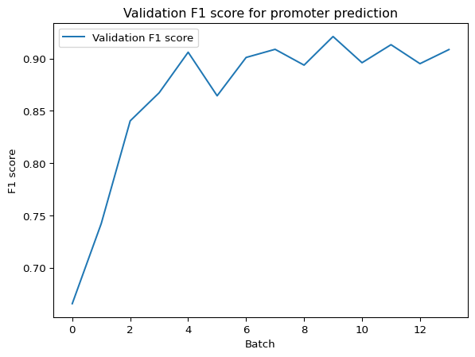
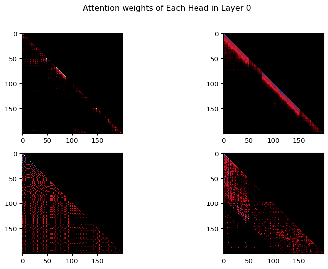
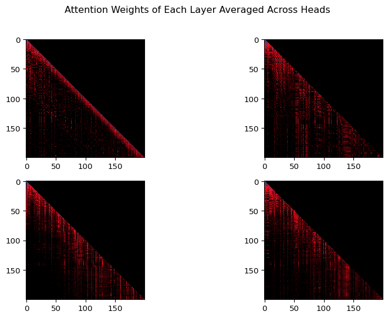

In this notebook, we explore how one can pretrain and fine-tune a basic genomic language model (gLM). As the basis of our model, we use Andrej Karpathy’s publicly-available nanoGPT framework (with some slight edits). This is a flexible implementation of a basic GPT model (based on GPT-2) that can take generic text as input. Here, we showcase how relatively sophisticated models can be trained efficiently, and how these can be fine-tuned to specific prediction tasks using datasets pulled from the Nucleotide Transformer training notebook (direct sources will be cited when datasets are introduced). Generally, the goal of this notebook is to provide hands-on experience in working with language models, and give insight into the fundamentals of attention-based deep learning.
This notebook builds directly on notebook-01, where you built a character-level GPT from scratch on tiny Shakespeare. Here we apply the same architecture to a much larger, biologically meaningful corpus: the 3.2-billion-character human reference genome. The GPT class you will see below implements exactly what you assembled piece by piece in notebook-01 — just packaged into the production-ready form from Karpathy’s nanoGPT repository.
Steps
This notebook demonstrates how to:
Tokenize genomic data to be read by a language model
Train and sample from a generative language model
Fine-tune a model with additional training to perform specific tasks
Setup
First, it is necessary to connect to the GPU. If you are working in Colab, this can be done in the upper right corner by selecting “T4 GPU” as your runtime option.
Next, we need to install a few things that help us build and run the model efficiently.
/Users/haekyungim/miniconda3/envs/nanogpt46100/lib/python3.12/site-packages/tqdm/auto.py:21: TqdmWarning: IProgress not found. Please update jupyter and ipywidgets. See https://ipywidgets.readthedocs.io/en/stable/user_install.html
from .autonotebook import tqdm as notebook_tqdm
Download and Read the Reference Genome
For our training, we will be using the GRCh38 human reference genome (credit to the Genome Reference Consortium: https://www.ncbi.nlm.nih.gov/grc). In the next block, we simply create a place to store our genome in the Colab filesystem and download the genome file remotely.
Note: If you are running locally, set fasta_file to the path of your local hg38 FASTA file. All outputs (tokenized genome, checkpoints) will be saved to ~/Downloads/gene46100-unit01/. The fasta path above is instructor-specific and will not work on your machine.
Prepare the hg38 genomic dataset for character-level language modeling. Instead of encoding with BPE tokens, we just map characters to ints. This will save train.bin, val.bin containing the ids, and meta.pkl containing the encoder and decoder and some other related info.
Now that we have the genome file saved locally, we have to read it into our environment in order to make it usable. To do this, we just read in the entire file as one long string, which we can then subset and investigate as we wish. For example, we may want to know the total length of our dataset, and all of the unique characters we have:
meta_path = os.path.join(WORKDIR, 'meta.pkl')tokenized_exists = (os.path.exists(os.path.join(WORKDIR, 'train.bin')) and os.path.exists(os.path.join(WORKDIR, 'val.bin')) and os.path.exists(meta_path))if tokenized_exists:print("Tokenized files found — loading vocab from meta.pkl, skipping genome read.")withopen(meta_path, 'rb') as f: meta = pickle.load(f) vocab_size = meta['vocab_size'] stoi = meta['stoi'] itos = meta['itos'] data =None# not needed; tokenized files existprint(f"vocab size: {vocab_size:,}")else:withopen(input_file_path, 'r') as f: data = f.read()print(f"length of dataset in characters: {len(data):,}") chars =sorted(list(set(data))) vocab_size =len(chars)print("all the unique characters:", ''.join(chars))print(f"vocab size: {vocab_size:,}")
Tokenized files found — loading vocab from meta.pkl, skipping genome read.
vocab size: 65
Great! The number of characters we have is approximately the same as the number of nucleotides in the human genome (about 3.2 billion), so it looks like our data imported correctly. However, you may notice that we have more characters than just “A”, “T”, “C”, “G”, and “N” as you may expect from genomic data. This is because our text file includes headers for each part of the genome assembly (i.e. chromosomes and fragments).
UPDATE: Daniel tested that performance of downstream task is better when removing non DNA characters. One nice thing about working with a language model is that we don’t need to worry about this. Even if the input data is a bit messy, the model is essentially designed to predict the most likely characters based on a general input. Since the headers make up a tiny fraction of the total number of characters, our model will assign a very very low probability to each of the non-ATCGN characters, and they will not influence our outputs. To keep the example simple, we will keep using the full genome file with non-DNA characters.
Mapping Characters to Integers (i.e. Tokenization)
Now that we have our text, we need to put it into a format that is more easily readable for our model. Generally, this process is called Tokenization. There are many different methods for this, and each will impact the performance of the model differently (for example byte pair encoding or non-overlapping kmer tokenization used by other gLMs), but for the purpose of this notebook we will use a simple character-level tokenization. This means that we will simply assign a different integer to each unique character, and then transform our input into a long list of integers to be read by our model:
ifnot tokenized_exists:# create a mapping from characters to integers stoi = { ch:i for i,ch inenumerate(chars) } itos = { i:ch for i,ch inenumerate(chars) }
def encode(s):return [stoi[c] for c in s] # encoder: take a string, output a list of integersdef decode(l):return''.join([itos[i] for i in l]) # decoder: take a list of integers, output a string
Now that we have our functions defined, it is time to actually do the tokenization. This will take a few minutes, so go ahead and run the block, and see the description of what it is doing below:
if tokenized_exists:print("Tokenized files already exist — skipping tokenization.")else:# create the train and test splits n =len(data) train_data = data[:int(n*0.9)] val_data = data[int(n*0.9):]#save memorydel data#helper function to store/append data to binary files and save RAMdef append_to_binary_file(filename, obj):withopen(filename, 'ab') asfile: # Open in append-binary mode obj.tofile(file)# encode both to integers ntrain=len(train_data) nval =len(val_data)for i in np.arange(0,1,0.05):print(f"Tokenizing: {int(i*100):,}% complete") train_ids = encode(train_data[int(ntrain*i):int(ntrain*(i+0.05))]) val_ids = encode(val_data[int(nval*i):int(nval*(i+0.05))]) train_ids = np.array(train_ids, dtype=np.uint16) val_ids = np.array(val_ids, dtype=np.uint16) append_to_binary_file(os.path.join(WORKDIR, 'train.bin'), train_ids) append_to_binary_file(os.path.join(WORKDIR, 'val.bin'), val_ids)print(f"train has {ntrain:,} tokens")print(f"val has {nval:,} tokens")
First, we are dividing the genome into a training and testing dataset using a simple 90/10 split.
Next, we create a helper function that will help us save the integer lists locally. These end up taking up a lot of space in our Python environment, so it is better to save them to the disk and only access them when needed rather than having them sit and take up RAM.
Finally, we actually go through and encode/tokenize our data. Since the dataset is so large, we don’t have enough memory to do this all at once in Colab, so we encode our data in batches and then push each new batch to our locally-saved files.
We also want to save some of our metadata (i.e. vocabulary size, and our mappings from characters to integers and back) to pull back in later.
# save the meta information as well, to help us encode/decode latermeta = {'vocab_size': vocab_size,'itos': itos,'stoi': stoi,}withopen(os.path.join(WORKDIR, 'meta.pkl'), 'wb') as f: pickle.dump(meta, f)
if running_in_colab: os.kill(os.getpid(), 9) #If running in a low-memory environment, this will clear our RAM. After this, go run the very first block again!
Discuss: What does each “token” in our model represent — a single base, a stretch of bases, a functional region? What would change if you used k-mer tokens instead?
Discuss: Why is tokenization necessary? What would it mean to feed raw DNA letters directly to a neural network?
Creating the Model
Now that we have our training data ready to go, it’s time to actually create the gLM. First, we define the function we are going to use to do the heavy lifting in the attention layers. We will go into more detail on what we mean by attention during training, but if you are interested in what the implementation looks like, see the block below (and be sure to run it either way!)
#Defining attention function (copied from Pytorch documentation, just need to save weights correctly)def scaled_dot_product_attention(query, key, value, attn_mask=None, dropout_p=0.0, is_causal=False, scale=None): L, S = query.size(-2), key.size(-2) scale_factor =1/ math.sqrt(query.size(-1)) if scale isNoneelse scale attn_bias = torch.zeros(L, S, dtype=query.dtype, device=query.device)if is_causal:assert attn_mask isNone temp_mask = torch.ones(L, S, dtype=torch.bool, device=query.device).tril(diagonal=0) attn_bias.masked_fill_(temp_mask.logical_not(), float("-inf")) attn_bias.to(query.dtype)if attn_mask isnotNone:if attn_mask.dtype == torch.bool: attn_bias.masked_fill_(attn_mask.logical_not(), float("-inf"))else: attn_bias += attn_mask attn_weight = query @ key.transpose(-2, -1) * scale_factor attn_weight += attn_bias attn_weight = torch.softmax(attn_weight, dim=-1) attn_weight = torch.dropout(attn_weight, dropout_p, train=True)return attn_weight, attn_weight @ value
Now that we have our attention function, it’s time to define the full model. This is the production-ready version of the architecture you built step by step in notebook-01 — the same Head, MultiHeadAttention, Block, and language model head, combined into a single GPT class. If you see something unfamiliar, trace it back to the corresponding piece from notebook-01.
The main model is created as a class simply called GPT. Within this model, we have a few different types of layers/elements:
Embedding: In our model, we project our relatively simple vocabulary (40 characters) into a higher-dimensional space in order to increase the model’s capacity to understand more complex relationships between tokens. This is a bit difficult to visualize, but in essence Embedding layers just perform this projection and return the resulting dictionary to use later in our model. For language models, we usually embed both the tokens and the positions of the tokens, for reasons we will discuss later.
LayerNorm: As the name suggests, this layer simply applies normalization across the input features. This stabilizes the training, as it ensures each feature has a similar scale.
Dropout: Dropout layers randomly zero-out some of the elements in the input tensor. This serves as a form of regularization, and helps avoid overfitting our training data.
Causal Self-Attention: The mechanism of this layer will be described in further detail below, but this is the layer where our model learns the relationship between each of the tokens in the input, which is what gives it predictive power to generate what token will come next.
MLP: One can think of the MLP class as a mini neural network within our model. It is made up of a linear layer, a GELU activation layer, another linear layer, and finally a dropout layer. In short, the MLP element introduces non-linearity into our model, and helps us transform the output of our attention layer back into something we can pass through attention again, and decode into DNA sequence.
Block: This is not really a layer, it is more a sequence of layers. Specifically, we define a block as LayerNorm → Causal Self-Attention → LayerNorm → MLP
Now that we have these modules defined, the general outline of our GPT model is as below (assume the outputs of each step are passed to the next):
Token and Position Embedding Layers
Dropout layer
Blocks (repeated n times, i.e. if we want 6 attention layers we will have 6 Blocks)
LayerNorm
Linear layer to transform embedded outputs back into our vocab size
Loss calculation (if training)
"""Full definition of a GPT Language Model, all of it in this single file.References:1) the official GPT-2 TensorFlow implementation released by OpenAI:https://github.com/openai/gpt-2/blob/master/src/model.py2) huggingface/transformers PyTorch implementation:https://github.com/huggingface/transformers/blob/main/src/transformers/models/gpt2/modeling_gpt2.py"""gc.collect()class LayerNorm(nn.Module):""" LayerNorm but with an optional bias. PyTorch doesn't support simply bias=False """def__init__(self, ndim, bias):super().__init__()self.weight = nn.Parameter(torch.ones(ndim))self.bias = nn.Parameter(torch.zeros(ndim)) if bias elseNonedef forward(self, input):return F.layer_norm(input, self.weight.shape, self.weight, self.bias, 1e-5)class CausalSelfAttention(nn.Module):def__init__(self, config):super().__init__()assert config.n_embd % config.n_head ==0# key, query, value projections for all heads, but in a batchself.c_attn = nn.Linear(config.n_embd, 3* config.n_embd, bias=config.bias)# output projectionself.c_proj = nn.Linear(config.n_embd, config.n_embd, bias=config.bias)# regularizationself.attn_dropout = nn.Dropout(config.dropout)self.resid_dropout = nn.Dropout(config.dropout)self.n_head = config.n_headself.n_embd = config.n_embdself.dropout = config.dropout# flash attention make GPU go brrrrr but support is only in PyTorch >= 2.0self.flash =hasattr(torch.nn.functional, 'scaled_dot_product_attention')def forward(self, x): B, T, C = x.size() # batch size, sequence length, embedding dimensionality (n_embd)# calculate query, key, values for all heads in batch and move head forward to be the batch dim q, k, v =self.c_attn(x).split(self.n_embd, dim=2) k = k.view(B, T, self.n_head, C //self.n_head).transpose(1, 2) # (B, nh, T, hs) q = q.view(B, T, self.n_head, C //self.n_head).transpose(1, 2) # (B, nh, T, hs) v = v.view(B, T, self.n_head, C //self.n_head).transpose(1, 2) # (B, nh, T, hs)# causal self-attention; Self-attend: (B, nh, T, hs) x (B, nh, hs, T) -> (B, nh, T, T)ifself.flash:# efficient attention using Flash Attention CUDA kernels attn_weight, y = scaled_dot_product_attention(q, k, v, attn_mask=None, dropout_p=self.dropout ifself.training else0, is_causal=True) y = y.transpose(1, 2).contiguous().view(B, T, C) # re-assemble all head outputs side by side# output projection y =self.resid_dropout(self.c_proj(y))return y, torch.mean(attn_weight, dim=0)class MLP(nn.Module):def__init__(self, config):super().__init__()self.c_fc = nn.Linear(config.n_embd, 4* config.n_embd, bias=config.bias)self.gelu = nn.GELU()self.c_proj = nn.Linear(4* config.n_embd, config.n_embd, bias=config.bias)self.dropout = nn.Dropout(config.dropout)def forward(self, x): x =self.c_fc(x) x =self.gelu(x) x =self.c_proj(x) x =self.dropout(x)return xclass Block(nn.Module):def__init__(self, config):super().__init__()self.ln_1 = LayerNorm(config.n_embd, bias=config.bias)self.attn = CausalSelfAttention(config)self.ln_2 = LayerNorm(config.n_embd, bias=config.bias)self.mlp = MLP(config)def forward(self, x): val, attn_weight =self.attn(self.ln_1(x)) x = x + val x = x +self.mlp(self.ln_2(x))return x, attn_weight@dataclassclass GPTConfig: #Default values for configuration, originally designed to match GPT-2, will override for training block_size: int=1024 vocab_size: int=50304# GPT-2 vocab_size of 50257, padded up to nearest multiple of 64 for efficiency n_layer: int=12 n_head: int=12 n_embd: int=768 dropout: float=0.0 bias: bool=True# True: bias in Linears and LayerNorms, like GPT-2. False: a bit better and fasterclass GPT(nn.Module):def__init__(self, config):super().__init__()assert config.vocab_size isnotNoneassert config.block_size isnotNoneself.config = configself.transformer = nn.ModuleDict(dict( wte = nn.Embedding(config.vocab_size, config.n_embd), wpe = nn.Embedding(config.block_size, config.n_embd), drop = nn.Dropout(config.dropout), h = nn.ModuleList([Block(config) for _ inrange(config.n_layer)]), ln_f = LayerNorm(config.n_embd, bias=config.bias), ))self.lm_head = nn.Linear(config.n_embd, config.vocab_size, bias=False)self.transformer.wte.weight =self.lm_head.weight # https://paperswithcode.com/method/weight-tying# init all weightsself.apply(self._init_weights)# apply special scaled init to the residual projections, per GPT-2 paperfor pn, p inself.named_parameters():if pn.endswith('c_proj.weight'): torch.nn.init.normal_(p, mean=0.0, std=0.02/math.sqrt(2* config.n_layer))# report number of parametersprint("number of parameters: %.2fM"% (self.get_num_params()/1e6,))def get_num_params(self, non_embedding=True):""" Return the number of parameters in the model. For non-embedding count (default), the position embeddings get subtracted. The token embeddings would too, except due to the parameter sharing these params are actually used as weights in the final layer, so we include them. """ n_params =sum(p.numel() for p inself.parameters())if non_embedding: n_params -=self.transformer.wpe.weight.numel()return n_paramsdef _init_weights(self, module):ifisinstance(module, nn.Linear): torch.nn.init.normal_(module.weight, mean=0.0, std=0.02)if module.bias isnotNone: torch.nn.init.zeros_(module.bias)elifisinstance(module, nn.Embedding): torch.nn.init.normal_(module.weight, mean=0.0, std=0.02)def forward(self, idx, targets=None):#device = idx.device b, t = idx.size() weight_lst = []assert t <=self.config.block_size, f"Cannot forward sequence of length {t}, block size is only {self.config.block_size}" pos = torch.arange(0, t, dtype=torch.long, device=device) # shape (t)# forward the GPT model itself tok_emb =self.transformer.wte(idx) # token embeddings of shape (b, t, n_embd) pos_emb =self.transformer.wpe(pos) # position embeddings of shape (t, n_embd) x =self.transformer.drop(tok_emb + pos_emb)for block inself.transformer.h: x, attn_weight = block(x) weight_lst.append(attn_weight) x =self.transformer.ln_f(x)if targets isnotNone:# if we are given some desired targets also calculate the loss logits =self.lm_head(x) loss = F.cross_entropy(logits.view(-1, logits.size(-1)), targets.view(-1), ignore_index=-1)else:# inference-time mini-optimization: only forward the lm_head on the very last position logits =self.lm_head(x[:, [-1], :]) # note: using list [-1] to preserve the time dim loss =Nonereturn logits, loss, weight_lstdef crop_block_size(self, block_size):# model surgery to decrease the block size if necessary# e.g. we may load the GPT2 pretrained model checkpoint (block size 1024)# but want to use a smaller block size for some smaller, simpler modelassert block_size <=self.config.block_sizeself.config.block_size = block_sizeself.transformer.wpe.weight = nn.Parameter(self.transformer.wpe.weight[:block_size])for block inself.transformer.h:ifhasattr(block.attn, 'bias'): block.attn.bias = block.attn.bias[:,:,:block_size,:block_size]def configure_optimizers(self, weight_decay, learning_rate, betas, device_type):# start with all of the candidate parameters param_dict = {pn: p for pn, p inself.named_parameters()}# filter out those that do not require grad param_dict = {pn: p for pn, p in param_dict.items() if p.requires_grad}# create optim groups. Any parameters that is 2D will be weight decayed, otherwise no.# i.e. all weight tensors in matmuls + embeddings decay, all biases and layernorms don't. decay_params = [p for n, p in param_dict.items() if p.dim() >=2] nodecay_params = [p for n, p in param_dict.items() if p.dim() <2] optim_groups = [ {'params': decay_params, 'weight_decay': weight_decay}, {'params': nodecay_params, 'weight_decay': 0.0} ] num_decay_params =sum(p.numel() for p in decay_params) num_nodecay_params =sum(p.numel() for p in nodecay_params)print(f"num decayed parameter tensors: {len(decay_params)}, with {num_decay_params:,} parameters")print(f"num non-decayed parameter tensors: {len(nodecay_params)}, with {num_nodecay_params:,} parameters")# Create AdamW optimizer and use the fused version if it is available fused_available ='fused'in inspect.signature(torch.optim.AdamW).parameters use_fused = fused_available and device_type =='cuda' extra_args =dict(fused=True) if use_fused elsedict() optimizer = torch.optim.AdamW(optim_groups, lr=learning_rate, betas=betas, **extra_args)print(f"using fused AdamW: {use_fused}")return optimizerdef estimate_mfu(self, fwdbwd_per_iter, dt):""" estimate model flops utilization (MFU) in units of A100 bfloat16 peak FLOPS """# first estimate the number of flops we do per iteration.# see PaLM paper Appendix B as ref: https://arxiv.org/abs/2204.02311 N =self.get_num_params() cfg =self.config L, H, Q, T = cfg.n_layer, cfg.n_head, cfg.n_embd//cfg.n_head, cfg.block_size flops_per_token =6*N +12*L*H*Q*T flops_per_fwdbwd = flops_per_token * T flops_per_iter = flops_per_fwdbwd * fwdbwd_per_iter# express our flops throughput as ratio of A100 bfloat16 peak flops flops_achieved = flops_per_iter * (1.0/dt) # per second flops_promised =312e12# A100 GPU bfloat16 peak flops is 312 TFLOPS mfu = flops_achieved / flops_promisedreturn mfu@torch.no_grad()def generate(self, idx, max_new_tokens, temperature=1.0, top_k=None):""" Take a conditioning sequence of indices idx (LongTensor of shape (b,t)) and complete the sequence max_new_tokens times, feeding the predictions back into the model each time. Most likely you'll want to make sure to be in model.eval() mode of operation for this. """for _ inrange(max_new_tokens):# if the sequence context is growing too long we must crop it at block_size idx_cond = idx if idx.size(1) <=self.config.block_size else idx[:, -self.config.block_size:]# forward the model to get the logits for the index in the sequence logits, _ =self(idx_cond)[:2]# pluck the logits at the final step and scale by desired temperature logits = logits[:, -1, :] / temperature# optionally crop the logits to only the top k optionsif top_k isnotNone: v, _ = torch.topk(logits, min(top_k, logits.size(-1))) logits[logits < v[:, [-1]]] =-float('Inf')# apply softmax to convert logits to (normalized) probabilities probs = F.softmax(logits, dim=-1)# sample from the distribution idx_next = torch.multinomial(probs, num_samples=1)# append sampled index to the running sequence and continue idx = torch.cat((idx, idx_next), dim=1)return idx
Understanding Attention
Let’s talk about Attention. The first paper which outlines the Transformer neural network architecture (which relies heavily on the Attention mechanism and is the basis for most large language models today) is Attention is All you Need. This paper describes the application of Attention in a machine translation model, but the underlying ideas can be applied across any model that processes sequences of text.
At its core, the Attention mechanism allows us to analyze the pairwise relationship between every token in a given sequence. So, in a very simple example, if you’re looking at the sentence “The cow jumped over the moon”, and you are tokenizing by word, you may expect there to be a strong relationship between “jumped” and “over” (as one tends to jump over things), but not between the two iterations of “the”. Below, I describe the actual mechanism behind this in plain language. It will be an oversimplification, but hopefully it can provide some context into what our model is doing.
The way we model this using Attention is via Query (Q), Key (K), and Value (V) matrices. In short, the input into the Attention layer goes through three separate matrix multiplication processes with different weights to create Q, K, and V. The idea behind these matrices is that Q represents each position/token in the sequence, and what information each of those positions is “looking for”. K represents the information that each position contains, and therefore the actual Attention Score is obtained by doing matrix multiplication on Q and K. If two positions are a good match, they will have a higher attention score. The authors of the Enformer paper provide a good, simplified visualization of this, where darker colors represent a stronger relationship in the Key vector to the given Q position:
query-key-value
Once we have our Attention score matrix, we then multiply this by the V matrix, which represents the actual information of each token. This puts the Attention scores back into the context of the original token embeddings, which can then be passed to future layers.
One thing to note is that this calculation is often done in parallel, across multiple “heads” within a single layer. The idea behind this is that each head can learn different weights, and therefore multiple types of relationships between tokens can be represented within the same model. The Attention is All you Need paper provides a good diagram of the Attention process, and what multi-head attention looks like (note that Scaled Dot-Produce Attention is essentially the process we just described):
Attention_Diagram
Discuss: Our model uses causal self-attention — each position can only attend to positions before it. Does this match how DNA actually works biologically? What would bidirectional attention mean for a genomic model?
Discuss: What is the difference between the Query, Key, and Value matrices? Try to give an intuitive analogy.
Training
Now that our model constructors are ready, it’s time to start training! First, see below for the configuration settings we are using for the model. Most of these are not important for the purposes of this notebook, but just note that we are creating a model with 4 attention layers with 4 heads each (more on that below), our embedding size is 384 (so our vocabulary gets projected into 384-dimensional space), and our block size/context size is 300, so our model will look at 300 bp of sequence as each input. Training will take a while (about 5-10 minutes), so run the code block below and use the time to review the Attention section above and the training loop description below.
#@title Training Time!gc.collect()# -----------------------------------------------------------------------------# Set debug=True for a fast test run (finishes in ~1 min on CPU/MPS).# Set debug=False for the full training run used in the paper.debug =False# Set force_retrain_pretrain=True to ignore the saved checkpoint and retrain from scratch.force_retrain_pretrain =False# -----------------------------------------------------------------------------# default config values designed to train a gpt on hg38 reference genome# I/Oout_dir = os.path.join(WORKDIR, 'out')eval_interval =1000log_interval =100eval_iters =100eval_only =False# if True, script exits right after the first evalalways_save_checkpoint =False# if True, always save a checkpoint after each evalinit_from ='scratch'# 'scratch' or 'resume' or 'gpt2*'# wandb loggingwandb_log =False# disabled by defaultwandb_project ='genome_char'wandb_run_name ='mini-gpt'# 'run' + str(time.time())# datadataset ='genome_char'gradient_accumulation_steps =1# used to simulate larger batch sizesbatch_size =64# if gradient_accumulation_steps > 1, this is the micro-batch sizeblock_size =300# modeln_layer =4n_head =4n_embd =384dropout =0.2# for pretraining 0 is good, for finetuning try 0.1+bias =False# do we use bias inside LayerNorm and Linear layers?# adamw optimizerlearning_rate =1e-3# max learning ratemax_iters =4000# total number of training iterationsweight_decay =1e-1beta1 =0.9beta2 =0.99grad_clip =1.0# clip gradients at this value, or disable if == 0.0# learning rate decay settingsdecay_lr =True# whether to decay the learning ratewarmup_iters =100# how many steps to warm up forlr_decay_iters =4000# should be ~= max_iters per Chinchillamin_lr =1e-4# minimum learning rate, should be ~= learning_rate/10 per Chinchilla# DDP settings#backend = 'nccl' # 'nccl', 'gloo', etc.# systemdevice ='cuda'if torch.cuda.is_available() else'mps'if torch.backends.mps.is_available() else'cpu'dtype ='bfloat16'if torch.cuda.is_available() and torch.cuda.is_bf16_supported() else'float32'print(f"using device: {device}")compile= (device =='cuda') # torch.compile only on CUDA; MPS/CPU support is experimental and unreliableif debug: max_iters =50 eval_interval =25# checkpoint saved at iter 25 and 50 eval_iters =5# fewer batches per eval warmup_iters =5 lr_decay_iters =50 always_save_checkpoint =True# save even if val loss doesn't improvecompile=False# torch.compile is slow/unreliable on MPS# -----------------------------------------------------------------------------config_keys = [k for k,v inglobals().items() ifnot k.startswith('_') andisinstance(v, (int, float, bool, str))]#exec(open('configurator.py').read()) # overrides from command line or config fileconfig = {k: globals()[k] for k in config_keys} # will be useful for logging# -----------------------------------------------------------------------------# various inits, derived attributes, I/O setupmaster_process =Trueseed_offset =0ddp_world_size =1tokens_per_iter = gradient_accumulation_steps * ddp_world_size * batch_size * block_sizeprint(f"tokens per iteration will be: {tokens_per_iter:,}")if master_process: os.makedirs(out_dir, exist_ok=True)torch.manual_seed(1337+ seed_offset)torch.backends.cuda.matmul.allow_tf32 =True# allow tf32 on matmultorch.backends.cudnn.allow_tf32 =True# allow tf32 on cudnndevice_type ='cuda'if'cuda'in device else'cpu'# for later use in torch.autocast# note: float16 data type will automatically use a GradScalerptdtype = {'float32': torch.float32, 'bfloat16': torch.bfloat16, 'float16': torch.float16}[dtype]ctx = nullcontext() if device_type =='cpu'else torch.amp.autocast(device_type=device_type, dtype=ptdtype)# poor man's data loaderdata_dir = WORKDIRdef get_batch(split):# We recreate np.memmap every batch to avoid a memory leak, as per# https://stackoverflow.com/questions/45132940/numpy-memmap-memory-usage-want-to-iterate-once/61472122#61472122if split =='train': data = np.memmap(os.path.join(data_dir, 'train.bin'), dtype=np.uint16, mode='r')else: data = np.memmap(os.path.join(data_dir, 'val.bin'), dtype=np.uint16, mode='r') ix = torch.randint(len(data) - block_size, (batch_size,)) x = torch.stack([torch.from_numpy((data[i:i+block_size]).astype(np.int64)) for i in ix]) y = torch.stack([torch.from_numpy((data[i+1:i+1+block_size]).astype(np.int64)) for i in ix])if device_type =='cuda':# pin arrays x,y, which allows us to move them to GPU asynchronously (non_blocking=True) x, y = x.pin_memory().to(device, non_blocking=True), y.pin_memory().to(device, non_blocking=True)else: x, y = x.to(device), y.to(device)return x, y# init these up here, can override if init_from='resume' (i.e. from a checkpoint)iter_num =0best_val_loss =1e9# attempt to derive vocab_size from the datasetmeta_path = os.path.join(data_dir, 'meta.pkl')meta_vocab_size =Noneif os.path.exists(meta_path):withopen(meta_path, 'rb') as f: meta = pickle.load(f) meta_vocab_size = meta['vocab_size']print(f"found vocab_size = {meta_vocab_size} (inside {meta_path})")# model initmodel_args =dict(n_layer=n_layer, n_head=n_head, n_embd=n_embd, block_size=block_size, bias=bias, vocab_size=None, dropout=dropout) # start with model_args from command lineif init_from =='scratch':# init a new model from scratchprint("Initializing a new model from scratch")# determine the vocab size we'll use for from-scratch trainingif meta_vocab_size isNone:print("defaulting to vocab_size of GPT-2 to 50304 (50257 rounded up for efficiency)") model_args['vocab_size'] = meta_vocab_size if meta_vocab_size isnotNoneelse50304 gptconf = GPTConfig(**model_args) model = GPT(gptconf)# crop down the model block size if desired, using model surgeryif block_size < model.config.block_size: model.crop_block_size(block_size) model_args['block_size'] = block_size # so that the checkpoint will have the right valuemodel.to(device)# initialize a GradScaler. If enabled=False scaler is a no-opscaler = torch.cuda.amp.GradScaler(enabled=(dtype =='float16'and device_type =='cuda'))# optimizeroptimizer = model.configure_optimizers(weight_decay, learning_rate, (beta1, beta2), device_type)#if init_from == 'resume':# optimizer.load_state_dict(checkpoint['optimizer'])checkpoint =None# free up memory# compile the modelifcompile:print("compiling the model... (takes a ~minute)") unoptimized_model = model model = torch.compile(model) # requires PyTorch 2.0# helps estimate an arbitrarily accurate loss over either split using many batches@torch.no_grad()def estimate_loss(): out = {} model.eval()for split in ['train', 'val']: losses = torch.zeros(eval_iters)for k inrange(eval_iters): X, Y = get_batch(split)with ctx: logits, loss = model(X, Y)[:2] losses[k] = loss.item() out[split] = losses.mean() model.train()return out# learning rate decay scheduler (cosine with warmup)def get_lr(it):# 1) linear warmup for warmup_iters stepsif it < warmup_iters:return learning_rate * it / warmup_iters# 2) if it > lr_decay_iters, return min learning rateif it > lr_decay_iters:return min_lr# 3) in between, use cosine decay down to min learning rate decay_ratio = (it - warmup_iters) / (lr_decay_iters - warmup_iters)assert0<= decay_ratio <=1 coeff =0.5* (1.0+ math.cos(math.pi * decay_ratio)) # coeff ranges 0..1return min_lr + coeff * (learning_rate - min_lr)# loggingif wandb_log and master_process:import wandb wandb.init(project=wandb_project, name=wandb_run_name, config=config)_pretrain_ckpt = os.path.join(out_dir, 'ckpt.pt')if os.path.exists(_pretrain_ckpt) andnot force_retrain_pretrain:print(f"Pretraining checkpoint found at {_pretrain_ckpt} — skipping training.")print("Set force_retrain_pretrain=True to retrain from scratch.")else:# training loop X, Y = get_batch('train') # fetch the very first batch t0 = time.time() local_iter_num =0# number of iterations in the lifetime of this process raw_model = model running_mfu =-1.0whileTrue:# determine and set the learning rate for this iteration lr = get_lr(iter_num) if decay_lr else learning_ratefor param_group in optimizer.param_groups: param_group['lr'] = lr# evaluate the loss on train/val sets and write checkpointsif iter_num % eval_interval ==0and master_process: losses = estimate_loss()print(f"step {iter_num}: train loss {losses['train']:.4f}, val loss {losses['val']:.4f}")if wandb_log: wandb.log({"iter": iter_num,"train/loss": losses['train'],"val/loss": losses['val'],"lr": lr,"mfu": running_mfu*100, # convert to percentage })if losses['val'] < best_val_loss or always_save_checkpoint: best_val_loss = losses['val']if iter_num >0: checkpoint = {'model': raw_model.state_dict(),'optimizer': optimizer.state_dict(),'model_args': model_args,'iter_num': iter_num,'best_val_loss': best_val_loss,'config': config, }print(f"saving checkpoint to {out_dir}") torch.save(checkpoint, os.path.join(out_dir, 'ckpt.pt'))if iter_num ==0and eval_only:break# forward backward update, with optional gradient accumulation to simulate larger batch size# and using the GradScaler if data type is float16for micro_step inrange(gradient_accumulation_steps):with ctx: logits, loss = model(X, Y)[:2] loss = loss / gradient_accumulation_steps # scale the loss to account for gradient accumulation# immediately async prefetch next batch while model is doing the forward pass on the GPU X, Y = get_batch('train')# backward pass, with gradient scaling if training in fp16 scaler.scale(loss).backward()# clip the gradientif grad_clip !=0.0: scaler.unscale_(optimizer) torch.nn.utils.clip_grad_norm_(model.parameters(), grad_clip)# step the optimizer and scaler if training in fp16 scaler.step(optimizer) scaler.update()# flush the gradients as soon as we can, no need for this memory anymore optimizer.zero_grad(set_to_none=True)# timing and logging t1 = time.time() dt = t1 - t0 t0 = t1if iter_num % log_interval ==0and master_process:# get loss as float. note: this is a CPU-GPU sync point# scale up to undo the division above, approximating the true total loss (exact would have been a sum) lossf = loss.item() * gradient_accumulation_stepsif local_iter_num >=5: # let the training loop settle a bit mfu = raw_model.estimate_mfu(batch_size * gradient_accumulation_steps, dt) running_mfu = mfu if running_mfu ==-1.0else0.9*running_mfu +0.1*mfuprint(f"iter {iter_num}: loss {lossf:.4f}, time {dt*1000:.2f}ms, mfu {running_mfu*100:.2f}%") iter_num +=1 local_iter_num +=1# termination conditionsif iter_num > max_iters:break
using device: mps
tokens per iteration will be: 19,200
found vocab_size = 65 (inside /Users/haekyungim/Downloads/gene46100-unit01/meta.pkl)
Initializing a new model from scratch
number of parameters: 7.11M
num decayed parameter tensors: 18, with 7,218,048 parameters
num non-decayed parameter tensors: 9, with 3,456 parameters
/var/folders/05/l5yxwwcn31q8qn8ytlm87q5r0000gr/T/ipykernel_34431/4245185043.py:137: FutureWarning: `torch.cuda.amp.GradScaler(args...)` is deprecated. Please use `torch.amp.GradScaler('cuda', args...)` instead.
scaler = torch.cuda.amp.GradScaler(enabled=(dtype == 'float16' and device_type == 'cuda'))
using fused AdamW: False
Pretraining checkpoint found at /Users/haekyungim/Downloads/gene46100-unit01/out/ckpt.pt — skipping training.
Set force_retrain_pretrain=True to retrain from scratch.
Now that the model is defined and the Attention mechanism is clear, let’s walk through what the training loop is doing:
Generate a batch from our training data: This consists of sampling a 300 bp sequence out of the genome as our “data”, then the same 300 bp but shifted over by 1 as our “labels”. Our batch size is 64, so a single batch will be 64 of these pairs of sequences
Plug the batch into our model to calculate loss. Our model is “causal”, so it tries to predict the next token based on all previous tokens (i.e. data[0] is used to predict label[0], data[0:1] is used to predict label[1], data[0:2] is used to predict label[2], etc.)
Once we have calculated the loss (using Cross Entropy Loss), we begin the backward pass and take a step based on the gradients of all of our parameters.
Grab another batch and repeat
Once we hit the evaluation interval (1000 batches), we pause our model training, and evaluate the average loss over 100 additional batches of the training and validation sets, to get a checkpoint of our model performance
If the performance on the validation data is the best we’ve seen yet, we save this version of the model as a checkpoint to use later.
Obviously there is quite a bit more code than just these steps above, but this summary covers all of the functionally important parts. Much of the extra code above is related to making the model run efficiently, keeping track of how long it has been running, ensuring we are allocating GPU/CPU memory correctly, etc.
Sampling from the model
Great! Now that we have a trained model, let’s see what it can generate it. The code block below simply pulls out the highest-performing version of the model we just trained, and feeds it a newline character to see what it will generate:
Sampling from the model
"""Sample from a trained model"""# -----------------------------------------------------------------------------init_from ='resume'# either 'resume' (from an out_dir) or a gpt2 variant (e.g. 'gpt2-xl')out_dir = os.path.join(WORKDIR, 'out') # ignored if init_from is not 'resume'start ="\n"# or "<|endoftext|>" or etc. Can also specify a file, use as: "FILE:prompt.txt"num_samples =5# number of samples to drawmax_new_tokens =250# number of tokens generated in each sampletemperature =0.8# 1.0 = no change, < 1.0 = less random, > 1.0 = more random, in predictionstop_k =200# retain only the top_k most likely tokens, clamp others to have 0 probabilityseed =1337device ='cuda'if torch.cuda.is_available() else'mps'if torch.backends.mps.is_available() else'cpu'dtype ='bfloat16'if torch.cuda.is_available() and torch.cuda.is_bf16_supported() else'float32'# 'float32' or 'bfloat16' or 'float16'compile= (device =='cuda') # torch.compile only on CUDA; MPS/CPU support is experimental and unreliable# -----------------------------------------------------------------------------torch.manual_seed(seed)if torch.cuda.is_available(): torch.cuda.manual_seed(seed)torch.backends.cuda.matmul.allow_tf32 =True# allow tf32 on matmultorch.backends.cudnn.allow_tf32 =True# allow tf32 on cudnndevice_type ='cuda'if'cuda'in device else'cpu'# for later use in torch.autocastptdtype = {'float32': torch.float32, 'bfloat16': torch.bfloat16, 'float16': torch.float16}[dtype]ctx = nullcontext() if device_type =='cpu'else torch.amp.autocast(device_type=device_type, dtype=ptdtype)# modelif init_from =='resume':# init from a model saved in a specific directory ckpt_path = os.path.join(out_dir, 'ckpt.pt') checkpoint = torch.load(ckpt_path, map_location=device, weights_only=False) gptconf = GPTConfig(**checkpoint['model_args']) model = GPT(gptconf) state_dict = checkpoint['model'] unwanted_prefix ='_orig_mod.'for k,v inlist(state_dict.items()):if k.startswith(unwanted_prefix): state_dict[k[len(unwanted_prefix):]] = state_dict.pop(k) model.load_state_dict(state_dict)model.eval()model.to(device)ifcompile: model = torch.compile(model) # requires PyTorch 2.0 (optional)# look for the meta pickle in case it is available in the dataset folderload_meta =Falseif init_from =='resume'and'config'in checkpoint and'dataset'in checkpoint['config']: # older checkpoints might not have these... meta_path = os.path.join(WORKDIR, 'meta.pkl') load_meta = os.path.exists(meta_path)if load_meta:print(f"Loading meta from {meta_path}...")withopen(meta_path, 'rb') as f: meta = pickle.load(f)# TODO want to make this more general to arbitrary encoder/decoder schemes stoi, itos = meta['stoi'], meta['itos'] encode =lambda s: [stoi[c] for c in s] decode =lambda l: ''.join([itos[i] for i in l])# encode the beginning of the promptif start.startswith('FILE:'):withopen(start[5:], 'r', encoding='utf-8') as f: start = f.read()start_ids = encode(start)x = (torch.tensor(start_ids, dtype=torch.long, device=device)[None, ...])# run generationwith torch.no_grad():with ctx:for k inrange(num_samples): y = model.generate(x, max_new_tokens, temperature=temperature, top_k=top_k)print(decode(y[0].tolist()))print('---------------')
number of parameters: 7.11M
Loading meta from /Users/haekyungim/Downloads/gene46100-unit01/meta.pkl...
CTGATTTAGTGCAATGTCTTCCAGCCAAGATAAAAAAATCAGTTTTTTTCATGAAACAGAAGGTATAGTTCAATTTTCAAAAAATAAAAAATTGAAGAAA
CATAAATAAATGGGATCAGACCTTAAATAAAAACATTTTCAGTGATTTCACTAAATATGGTTAGGCAACATTTTGTTAACTTACAAAGTGGAATTGTGAA
TATAATTTGTTAAGACTGATAAAAAATTGGATGACAATCTTATATGAA
---------------
CTAATACAAAAGTTCTTTAGCTTATCTGTTTGTACATAACTTATTAATGTTCGTTTTGTCATTTGGATGTATGTTTAAACATCTAAAAGTATCTGTTATC
GTTTTTTTTTTTTGTTTTTTGAGAGAGTGTTGTCACTCTGTCAGGCAATGGCACAACTGCAACTGGTCTGGCACTCAGTGATCATCAATCTCTCCAGCCT
CCCTCCAAGTGCTCAGCTGGGGAGTGCAAGTGCACCACACCCACCTCT
---------------
GGCAGGAGAGTGGATTGGGTGAGGGAGGTGGGCTGGGGGGATCTGGCGGGCCGGAGCGAGGACGGGTTATGAGGGAGGGGGACGGAGGCAGGGAATGTGA
AGTGGGAAGGAGAGAGGCAAAAGAGAGGGAGAGAAGGAGAGCAAGAGAGGAGGAGGGAGGGAGAAGGAGGGCAGGGAGAGAGAGGGAGAAGGGGAGAGAG
GAGGGAAGGGAGAGGGGGGGAGGGAGGAGGGGGGGGGGAGAGGGGAGG
---------------
GCAATATGTGCAAAATTCCATGAGAAAGTTTTTGCTTGTGAGAAAGACTCAATTATTGCTGTGCCTTAGTTTTCTGAAACCACTTCCCAAAGTAGCACCA
AATAAAAACAATTATTTTTAACAATATATAGCGGGGAATCCACAGAACTCTTTATTATGGATTCAATTATATCCCCAACTTGGAATTTTGTTAATCATAT
GTATGATTAGCATTGATTTTGTAAGTCAGTTTAAAATTTACCTCTTTT
---------------
ACATGCACAATGATAGGAAATGTGTCTAAAGCTCCTGTTCTCTGTTGGCTTGTTGGATGGGTGGAAAAAGATCTACAGATCTGTTGGAATTGGATCCACA
TTATATGAAAGAATGAAGTGAGAATTGAGAAGAGAAATAATATTCTGATTTTGAAGAAAACATTTCAGACGATGATTGTTAAAAATTCTTGTTTGAAAGA
TTCACCTCCTGGAAAAAACAGCAGAGAAACAAAAGTCAAAACAATTAG
---------------
And voila, it looks like our model is generating DNA sequence! But, that begs the question, how do we evaluate whether our model is actually performing well? With natural language, it’s pretty easy to tell whether an output makes sense or not, but it is not so simple with DNA. Therefore, let’s talk about the process of fine-tuning our model for more specific tasks.
Note for those interested: You may also notice some uppercase and lowercase sequences. This is expected, as in our original file any soft-masked bases (i.e. lower-confidence segments) are lowercase rather than uppercase. The fact that our model is not mixing lower and uppercase bases is a good sign, as these should not be mixed based on sequencing assembly techniques.
Discuss: Look at the generated sequences. Do they look like real DNA? What properties would you check to evaluate quality (nucleotide frequencies, k-mer distributions, known motifs)?
Discuss: What effect would adding more attention layers or heads have on the model’s performance? What are the tradeoffs?
Fine-Tuning (Promoter Classification)
Generating plausible DNA sequences shows that the model has learned something real about genomic structure. But generation alone doesn’t let us evaluate the model against ground truth. The key insight of transfer learning is that we can reuse that learned structure for a prediction task without starting from scratch: we freeze or lightly retrain the pretrained weights and add a small classification head on top. This is far more data-efficient than training a classifier from random initialization, because the model’s representations of DNA sequence already carry useful information.
Now let’s try applying this to two different problems. First, let’s look at a promoter classification problem pulled from the Nucleotide Transformer training notebook. In short, this dataset is made up of 300 bp sequences, each labelled as 1 for promoter or 0 for non-promoter. Let’s try to train our language model to separate these classes!
Note: This data was pulled from the DeePromoter paper, as cited below:
Oubounyt, M., Louadi, Z., Tayara, H., & Chong, K. T. (2019). DeePromoter: Robust Promoter Predictor Using Deep Learning. Frontiers in Genetics, 10. https://doi.org/10.3389/fgene.2019.00286
First, let’s actually load in the data:
Data setup required before running this section
The fine-tuning sections use pre-packaged dataset files stored in the course repository. You need to make these files available in the right location before running the cells below.
If you are running locally (cloned the repo): The files are already in place — no action needed. They live at post/unit01/data/ relative to the repo root.
# Load the promoter dataset from local parquet filesdata_dir ="data"train_dataset_promoter = load_dataset("parquet", data_files=os.path.join(data_dir, "promoter_all_train.parquet"), split="train")test_dataset_promoter = load_dataset("parquet", data_files=os.path.join(data_dir, "promoter_all_test.parquet"), split="train")num_labels_promoter =2
Next, let’s separate out the labels from the actual DNA sequences, and separate 5% of our training data to use as a validation set (the test set is already separated).
# Get training datatrain_sequences_promoter = train_dataset_promoter['sequence']train_labels_promoter = train_dataset_promoter['label']# Split the dataset into a training and a validation datasettrain_sequences_promoter, validation_sequences_promoter, train_labels_promoter, validation_labels_promoter = train_test_split(train_sequences_promoter, train_labels_promoter, test_size=0.05, random_state=42)# Get test datatest_sequences_promoter = test_dataset_promoter['sequence']test_labels_promoter = test_dataset_promoter['label']
Now, let’s take a quick look at what one of these examples looks like:
idx_sequence =-1sequence, label = train_sequences_promoter[idx_sequence], train_labels_promoter[idx_sequence]print(f"The DNA sequence is {sequence}.")print(f"Its associated label is label {label}.")idx_TATA = sequence.find("TATA")print(f"This promoter is a TATA promoter, as the TATA motif is present at the {idx_TATA}st nucleotide.")
The DNA sequence is CACACCAGACAAAATTTGGTTAATTTGCGCCCAATATTCATTACTTTGACCTAACCTTTGTTCTGAAGGCCGTGTACAAGGACAAGGCCCTGAGATTATTGCAACAGTAACTTGAAAAACTTTCAGAAGTCTATTCTGTAGGATTAAAGGAATGCTGAGACTATTCAAGTTTGAAGTCCTGGGGGTGGGGAAAAATAAAAAACCTGTGCTAGAAAGCTTAGTATAGCATGTAACTTTAGAGTCCTGTGGAGTCCTGAGTCTCCCACAGACCAGAACAGTCATTTAAAAGTTTTCAGGAAA.
Its associated label is label 1.
This promoter is a TATA promoter, as the TATA motif is present at the 221st nucleotide.
Now that we have all of our datasets, it is time to tokenize them using the same mapping that we created for our language model. first, we load them into a Dataset object so we can work with them more easily:
Next, we do the actual tokenization. However, remember that our previous encoding function could only handle a single example at a time (since our initial data file was one long string). We define a new tokenizing function below to use the same process, but apply it to multiple separate sequences:
Now that we’ve tokenized the data, let’s load it into Tensor format (which Pytorch uses in its models). Then, we can create a DataLoader, which will automatically create batches of our data and put them into a format which our model can read easily:
In the last step before training, we have to actually define a slightly new type of model. Essentially all we need to do here is add one more linear layer to our old model, which takes the original output and projects it into a two-dimensional output. This means that the “new” model will output the probability of the example belonging to each class. To do this, we just create a new model which pulls in our language model and adds the new layer on top:
class ClassificationModel(nn.Module):def__init__(self, base_model, num_labels):super(ClassificationModel, self).__init__()self.orig_model = base_modelself.classifier = nn.Linear(base_model.config.vocab_size, num_labels)self.num_labels = num_labelsdef forward(self, input_ids, labels=None): outputs =self.orig_model(input_ids) logits =self.classifier(outputs[0][:, 0, :]) attn_weights = outputs[2] loss =Noneif labels isnotNone: loss_fct = nn.CrossEntropyLoss() loss = loss_fct(logits.view(-1, self.num_labels), labels.view(-1))return (logits, loss, attn_weights) if loss isnotNoneelse (logits, attn_weights)
Now that we have our new model defined, let’s pull in the model we trained previously, and use it to create this new 2-label classification model:
# -----------------------------------------------------------------------------# Set force_retrain_promoter=True to ignore the saved checkpoint and retrain.force_retrain_promoter =False_promoter_ckpt = os.path.join(WORKDIR, 'promoter_classifier.pt')# -----------------------------------------------------------------------------init_from ='resume'# either 'resume' (from an out_dir) or a gpt2 variant (e.g. 'gpt2-xl')out_dir = os.path.join(WORKDIR, 'out') # ignored if init_from is not 'resume'seed =1337device ='cuda'if torch.cuda.is_available() else'mps'if torch.backends.mps.is_available() else'cpu'dtype ='bfloat16'if torch.cuda.is_available() and torch.cuda.is_bf16_supported() else'float32'# 'float32' or 'bfloat16' or 'float16'compile= (device =='cuda') # torch.compile only on CUDA; MPS/CPU support is experimental and unreliable# -----------------------------------------------------------------------------torch.manual_seed(seed)if torch.cuda.is_available(): torch.cuda.manual_seed(seed)torch.backends.cuda.matmul.allow_tf32 =True# allow tf32 on matmultorch.backends.cudnn.allow_tf32 =True# allow tf32 on cudnndevice_type ='cuda'if'cuda'in device else'cpu'# for later use in torch.autocastptdtype = {'float32': torch.float32, 'bfloat16': torch.bfloat16, 'float16': torch.float16}[dtype]ctx = nullcontext() if device_type =='cpu'else torch.amp.autocast(device_type=device_type, dtype=ptdtype)# modelif init_from =='resume':# init from a model saved in a specific directory ckpt_path = os.path.join(out_dir, 'ckpt.pt') checkpoint = torch.load(ckpt_path, map_location=device, weights_only=False) gptconf = GPTConfig(**checkpoint['model_args']) model = GPT(gptconf) state_dict = checkpoint['model'] unwanted_prefix ='_orig_mod.'for k,v inlist(state_dict.items()):if k.startswith(unwanted_prefix): state_dict[k[len(unwanted_prefix):]] = state_dict.pop(k) model.load_state_dict(state_dict)new_model = ClassificationModel(base_model=model, num_labels=2)new_model.eval()new_model.to(device)ifcompile: new_model = torch.compile(new_model) # requires PyTorch 2.0 (optional)
number of parameters: 7.11M
Now, go ahead and run the next block of code to train our new model. Again, this will take about 10 minutes, so go to the next paragraph for a description of what our training is actually doing.
optimizer = torch.optim.AdamW(new_model.parameters(), lr=2e-5)num_epochs=2total_steps =len(train_dataloader) * num_epochsdef calc_f1(predictions, true_labels): true_pos =0 false_pos =0 false_neg =0 true_neg =0for i in np.arange(len(predictions)) :if predictions[i] ==0and true_labels[i] ==0: true_neg +=1if predictions[i] ==1and true_labels[i] ==0: false_pos +=1if predictions[i] ==0and true_labels[i] ==1: false_neg +=1if predictions[i] ==1and true_labels[i] ==1: true_pos +=1 precision = true_pos / (true_pos + false_pos) if true_pos + false_pos >0else0 recall = true_pos / (true_pos + false_neg) F1 = (2*precision*recall / (precision + recall))return F1if os.path.exists(_promoter_ckpt) andnot force_retrain_promoter:print(f"Promoter checkpoint found at {_promoter_ckpt} — loading saved model and metrics.")print("Set force_retrain_promoter=True to retrain from scratch.") _saved = torch.load(_promoter_ckpt, map_location=device, weights_only=False) new_model.load_state_dict(_saved['model']) f1_scores = _saved['f1_scores']else: val_predictions = [] val_true_labels = []#Training Loop loss_lst = [] val_loss_lst = [] f1_scores = [] new_model.train()for epoch inrange(num_epochs): i =0for batch in train_dataloader: input_ids, labels = batch optimizer.zero_grad()# Forward pass outputs = new_model(input_ids, labels=labels) loss = outputs[1] loss_lst.append(loss.item())# Backward pass and optimization loss.backward() optimizer.step() i +=1if i %100==99: new_model.eval()with torch.no_grad():for val_batch in validation_dataloader: val_input_ids, val_labels = val_batch optimizer.zero_grad() val_outputs = new_model(val_input_ids, labels=val_labels) val_loss = val_outputs[1] val_loss_lst.append(val_loss.item()) val_logits = val_outputs[0] # Get the logits val_predictions.append(val_logits) val_true_labels.append(val_labels) val_predictions = torch.cat(val_predictions, dim=0) val_true_labels = torch.cat(val_true_labels, dim=0) val_predictions = torch.argmax(val_predictions, dim=1).tolist() val_true_labels = val_true_labels.tolist() f1_scores.append(calc_f1(val_predictions, val_true_labels))print(f"Epoch {epoch}, Batch {i}, Train Loss: {np.mean(loss_lst)}, Val Loss: {np.mean(val_loss_lst)}, Val F1: {calc_f1(val_predictions, val_true_labels)}") loss_lst = [] val_loss_lst = [] new_model.train() val_predictions = [] val_true_labels = [] torch.save({'model': new_model.state_dict(), 'f1_scores': f1_scores}, _promoter_ckpt)print(f"Promoter model saved to {_promoter_ckpt}")plt.plot(f1_scores, label='Validation F1 score')plt.title("Validation F1 score for promoter prediction")plt.xlabel("Batch")plt.ylabel("F1 score")plt.legend()plt.show()
Epoch 0, Batch 99, Train Loss: 0.7852443059285482, Val Loss: 0.6431625173205421, Val F1: 0.6657283603096411
Epoch 0, Batch 199, Train Loss: 0.5914899677038192, Val Loss: 0.5129594802856445, Val F1: 0.7422524565381708
Epoch 0, Batch 299, Train Loss: 0.4695886895060539, Val Loss: 0.3742648483741851, Val F1: 0.8405044510385756
Epoch 0, Batch 399, Train Loss: 0.3675766980648041, Val Loss: 0.2865948815430914, Val F1: 0.8673718470301057
Epoch 0, Batch 499, Train Loss: 0.3004111607372761, Val Loss: 0.23273632710888273, Val F1: 0.9061032863849765
Epoch 0, Batch 599, Train Loss: 0.2735249815881252, Val Loss: 0.30886207627398626, Val F1: 0.8644501278772379
Epoch 0, Batch 699, Train Loss: 0.2619949109852314, Val Loss: 0.22818011914690337, Val F1: 0.9010989010989011
Epoch 1, Batch 99, Train Loss: 0.23174227543994394, Val Loss: 0.20837861370472682, Val F1: 0.9088699878493317
Epoch 1, Batch 199, Train Loss: 0.21040638998150826, Val Loss: 0.23942307524737858, Val F1: 0.8937577511368335
Epoch 1, Batch 299, Train Loss: 0.22429307520389558, Val Loss: 0.1814308331481048, Val F1: 0.92110532639167
Epoch 1, Batch 399, Train Loss: 0.21664299055933953, Val Loss: 0.23769744485616684, Val F1: 0.8960662525879917
Epoch 1, Batch 499, Train Loss: 0.19047050792723894, Val Loss: 0.20412566228991463, Val F1: 0.913290113452188
Epoch 1, Batch 599, Train Loss: 0.19464786298573017, Val Loss: 0.25495333313232377, Val F1: 0.8951512639867385
Epoch 1, Batch 699, Train Loss: 0.20170207567512988, Val Loss: 0.22045027642022996, Val F1: 0.9086460032626428
Promoter model saved to /Users/haekyungim/Downloads/gene46100-unit01/promoter_classifier.pt

With this new model, we want to be able to classify promoter sequences. But, how do we do this when our base model has already been trained on a different task? The answer lies in a process called fine-tuning. This is where you take a pre-trained model, and train it again to perform better on a specific task. In this case, we are relying on the fact that our model already understands the intrinsic relationships in genomic sequences well, and are just shifting its goal. Rather than predicting future genomic sequence, we want it to apply its “knowledge” of sequences to predict whether they are promoters or not.
For language models, oftentimes fine-tuning tasks are much simpler than the initial learning process (and we assume that the layers of our model other than the new classification layer are already trained), so we usually use a much smaller learning rate (in this case 2e^{-5} and fewer training iterations. This is not always true, but it is a good rule of thumb. There are many options you have to optimize fine-tuning, including freezing various layers so that their weights are not updated, using different learning rates for different layers, and much more. But, for the purposes of this notebook, we are simply going to fine-tune the entire model.
Our training loop is very similar here, but even simpler than our initial training:
Take a batch from the training dataloader and pass it through the model to get loss
Do the backward pass, and have our optimizer adjust weights according to each parameter’s gradient and the learning rate
Repeat for all batches
Every 100 batches, run all validation samples through the model and calculate an average loss and F1 score (a metric for classification performance) for tracking purposes
Now that we’ve trained our model, let’s run the test data through it and see how it performs. While we do so, let’s also look at the attention weights for a specific test sample, and try to get some idea of what our model is doing:
new_model.eval() # Set the model to evaluation modepredictions = []true_labels = []i =0with torch.no_grad(): # Disable gradient calculation for inferencefor batch in test_dataloader: input_ids, labels = batch outputs = new_model(input_ids) logits = outputs[0] # Get the logits predictions.append(torch.argmax(logits).item()) true_labels.append(labels.item())if i ==3000: l =0 fig, axs = plt.subplots(2, 2) x = np.arange(2) y = np.arange(2)for j in x:for k in y: axs[j,k].imshow(outputs[1][0][l].cpu().detach().numpy(), cmap='gist_stern', interpolation='nearest') l +=1 fig.set_figwidth(10) fig.set_figheight(6) fig.suptitle("Attention weights of Each Head in Layer 0") plt.show() l =0 fig, axs = plt.subplots(2, 2) x = np.arange(2) y = np.arange(2)for j in x:for k in y: axs[j,k].imshow(torch.mean(outputs[1][l], dim=0).cpu().detach().numpy(), cmap='gist_stern', interpolation='nearest') l +=1 fig.set_figwidth(10) fig.set_figheight(6) fig.suptitle("Attention Weights of Each Layer Averaged Across Heads") plt.show() i +=1
Accuracy:91%
Precision: 0.98
Recall: 0.83
F1 Score: 0.9
Wow, it looks like our model actually performs pretty well! Especially for a model that’s gone through a total of 20 minutes of training on a single GPU. If we expanded our model or trained it over more data it would improve even further, but these are still good results.
Taking a look at the Attention graphs above, we can get some insight into what our model thinks is important for the given sample. The way to read these heatmaps is that the Queries are on the y-axis, and the Keys are on the x-axis. This is all mapped back to the original input, so we essentially have a set of base-by-base relationship heatmaps! For example, a vertical red line indicates that many Query positions saw that Key position as important in the classification task.
The first set is a breakdown of all of the heads of our first attention layer. As I mentioned above, we would expect each head to learn something slightly different about our input, and it appears that this is the case! For example, the second head was very focused on the relationships between the bases directly surrounding the query (which is why we have a bright diagonal line), while the 3rd and 4th heads had much more dispersed attention weights.
This pattern becomes even more apparent as we move to the second set of heatmaps, where we average the attention weights for all heads in each layer (to give an approximate idea of what each full layer learns about the input). At this level, we see some interesting patterns emerge. For example, multiple layers have strong attention weights at the position around 160-170 bp into the sequence, which means that it likely played an important role in deciding this sequence’s classification. Each head and layer learned some unique things about the sequence, so take some time to try and understand what these heatmaps are showing!
Discuss: Promoters have characteristic sequence features like TATA boxes. Does that make this classification task easier or harder compared to a task without such motifs? Why?
Discuss: The validation F1 score does not increase uniformly during training. What could cause this?
Discuss: Look at the attention weight heatmaps. Are there specific positions in the input sequence that consistently attract high attention? What might those positions correspond to biologically?
Fine-Tuning (Enhancer Classification)
Now that we’ve introduced the idea of fine-tuning and have a simple example, let’s move on to a more complicated task. We have another set of data from the Nucleotide Transformer training notebook which is made up of 200-bp sequences that are either labeled as strong enhancers, weak enhancers, or non-enhancers. This is a more complicated task not only because it is multi-class classification, enhancers also generally have less “characteristic” genomic structure compared to promoters. This means that (in theory) our model will have to understand more subtle relationships within each sequence to classify them correctly. This data comes from the below paper:
Geng, Q., Yang, R., & Zhang, L. (2022). A deep learning framework for enhancer prediction using word embedding and sequence generation. Biophysical Chemistry, 286, 106822. https://doi.org/10.1016/j.bpc.2022.106822
To start, we are going to load the data and tokenize it the exact same way we did previously:
# Load the enhancer dataset from local parquet filestrain_dataset_enhancers = load_dataset("parquet", data_files=os.path.join(data_dir, "enhancers_types_train.parquet"), split="train")test_dataset_enhancers = load_dataset("parquet", data_files=os.path.join(data_dir, "enhancers_types_test.parquet"), split="train")num_labels_enhancer =3
# Get training datatrain_sequences_enhancers = train_dataset_enhancers['sequence']train_labels_enhancers = train_dataset_enhancers['label']# Split the dataset into a training and a validation datasettrain_sequences_enhancers, validation_sequences_enhancers, train_labels_enhancers, validation_labels_enhancers = train_test_split(train_sequences_enhancers, train_labels_enhancers, test_size=0.10, random_state=42)# Get test datatest_sequences_enhancers = test_dataset_enhancers['sequence']test_labels_enhancers = test_dataset_enhancers['label']
Now, let’s load back in our original gLM, i.e. not the one we fine-tuned to classify promoters. This time, we need it to classify on 3 labels rather than 2, so it is simpler to just recreate a new version and fine-tune it from scratch.
# -----------------------------------------------------------------------------# Set force_retrain_enhancer=True to ignore the saved checkpoint and retrain.force_retrain_enhancer =False_enhancer_ckpt = os.path.join(WORKDIR, 'enhancer_classifier.pt')# -----------------------------------------------------------------------------init_from ='resume'# either 'resume' (from an out_dir) or a gpt2 variant (e.g. 'gpt2-xl')out_dir = os.path.join(WORKDIR, 'out') # ignored if init_from is not 'resume'seed =1337device ='cuda'if torch.cuda.is_available() else'mps'if torch.backends.mps.is_available() else'cpu'dtype ='bfloat16'if torch.cuda.is_available() and torch.cuda.is_bf16_supported() else'float32'# 'float32' or 'bfloat16' or 'float16'compile= (device =='cuda') # torch.compile only on CUDA; MPS/CPU support is experimental and unreliable# -----------------------------------------------------------------------------torch.manual_seed(seed)if torch.cuda.is_available(): torch.cuda.manual_seed(seed)torch.backends.cuda.matmul.allow_tf32 =True# allow tf32 on matmultorch.backends.cudnn.allow_tf32 =True# allow tf32 on cudnndevice_type ='cuda'if'cuda'in device else'cpu'# for later use in torch.autocastptdtype = {'float32': torch.float32, 'bfloat16': torch.bfloat16, 'float16': torch.float16}[dtype]ctx = nullcontext() if device_type =='cpu'else torch.amp.autocast(device_type=device_type, dtype=ptdtype)# modelif init_from =='resume':# init from a model saved in a specific directory ckpt_path = os.path.join(out_dir, 'ckpt.pt') checkpoint = torch.load(ckpt_path, map_location=device, weights_only=False) gptconf = GPTConfig(**checkpoint['model_args']) model = GPT(gptconf) state_dict = checkpoint['model'] unwanted_prefix ='_orig_mod.'for k,v inlist(state_dict.items()):if k.startswith(unwanted_prefix): state_dict[k[len(unwanted_prefix):]] = state_dict.pop(k) model.load_state_dict(state_dict)new_model = ClassificationModel(base_model=model, num_labels=3)new_model.eval()new_model.to(device)ifcompile: new_model = torch.compile(new_model) # requires PyTorch 2.0 (optional)
number of parameters: 7.11M
Now, let’s run through the same training loop. You may notice that we have greatly increased the number of epochs we are training for. This is partially due to the fact that the enhancer dataset is much smaller than the promoter dataset (so we need more epochs to get the equivalent number of training batches), but the task is also more complex, so it benefits our model to have more training iterations in general.
optimizer = torch.optim.AdamW(new_model.parameters(), lr=2e-5)num_epochs=10total_steps =len(train_dataloader) * num_epochsif os.path.exists(_enhancer_ckpt) andnot force_retrain_enhancer:print(f"Enhancer checkpoint found at {_enhancer_ckpt} — loading saved model and metrics.")print("Set force_retrain_enhancer=True to retrain from scratch.") _saved = torch.load(_enhancer_ckpt, map_location=device, weights_only=False) new_model.load_state_dict(_saved['model']) mcc_scores = _saved['mcc_scores']else: val_predictions = [] val_true_labels = []#Training Loop loss_lst = [] val_loss_lst = [] mcc_scores = [] new_model.train()for epoch inrange(num_epochs): i =0for batch in train_dataloader: input_ids, labels = batch optimizer.zero_grad()# Forward pass outputs = new_model(input_ids, labels=labels) loss = outputs[1] loss_lst.append(loss.item())# Backward pass and optimization loss.backward() optimizer.step() i +=1if i %100==99: new_model.eval()with torch.no_grad():for val_batch in validation_dataloader: val_input_ids, val_labels = val_batch optimizer.zero_grad() val_outputs = new_model(val_input_ids, labels=val_labels) val_loss = val_outputs[1] val_loss_lst.append(val_loss.item()) val_logits = val_outputs[0] # Get the logits val_predictions.append(torch.argmax(val_logits).item()) val_true_labels.append(val_labels.item())print(f"Epoch {epoch}, Batch {i}, Train Loss: {np.mean(loss_lst)}, Val Loss: {np.mean(val_loss_lst)}, Val MCC: {matthews_corrcoef(val_true_labels, val_predictions)}") mcc_scores.append(matthews_corrcoef(val_true_labels, val_predictions)) loss_lst = [] val_loss_lst = [] new_model.train() val_predictions = [] val_true_labels = [] torch.save({'model': new_model.state_dict(), 'mcc_scores': mcc_scores}, _enhancer_ckpt)print(f"Enhancer model saved to {_enhancer_ckpt}")
Epoch 0, Batch 99, Train Loss: 1.0387800227512012, Val Loss: 0.8664407651017886, Val MCC: 0.2945673933984293
Epoch 0, Batch 199, Train Loss: 0.8529182410240174, Val Loss: 0.7536472478556728, Val MCC: 0.4582964392680521
Epoch 1, Batch 99, Train Loss: 0.7910185450906152, Val Loss: 0.6904157148991414, Val MCC: 0.5091465124551264
Epoch 1, Batch 199, Train Loss: 0.7277035248279572, Val Loss: 0.6481487835392247, Val MCC: 0.55020933749683
Epoch 2, Batch 99, Train Loss: 0.7117179876512235, Val Loss: 0.6249565996164947, Val MCC: 0.5534360556870476
Epoch 2, Batch 199, Train Loss: 0.6598725658655167, Val Loss: 0.5756364744100607, Val MCC: 0.6117545456465057
Epoch 3, Batch 99, Train Loss: 0.63027912888441, Val Loss: 0.5534501494466512, Val MCC: 0.6294914222433288
Epoch 3, Batch 199, Train Loss: 0.5972756960988045, Val Loss: 0.5169414585492336, Val MCC: 0.6727822034467613
Epoch 4, Batch 99, Train Loss: 0.5714324170404727, Val Loss: 0.49664439667021243, Val MCC: 0.6893200126731094
Epoch 4, Batch 199, Train Loss: 0.5588996490836143, Val Loss: 0.4926233239513595, Val MCC: 0.7068381030287829
Epoch 5, Batch 99, Train Loss: 0.5373611189760603, Val Loss: 0.4967358731446973, Val MCC: 0.6941295091188829
Epoch 5, Batch 199, Train Loss: 0.515971246957779, Val Loss: 0.46324746819392204, Val MCC: 0.7215524265397188
Epoch 6, Batch 99, Train Loss: 0.5009659150162259, Val Loss: 0.49918518772282816, Val MCC: 0.6997922508591838
Epoch 6, Batch 199, Train Loss: 0.4871812579035759, Val Loss: 0.43963251317059276, Val MCC: 0.7545459804743663
Epoch 7, Batch 99, Train Loss: 0.4818192951314084, Val Loss: 0.445064961447075, Val MCC: 0.7334317169826818
Epoch 7, Batch 199, Train Loss: 0.4637818658351898, Val Loss: 0.44373841545639126, Val MCC: 0.7411418515913545
Epoch 8, Batch 99, Train Loss: 0.4639499183442142, Val Loss: 0.46254503854028456, Val MCC: 0.734882446858033
Epoch 8, Batch 199, Train Loss: 0.4367222782969475, Val Loss: 0.42725496284701625, Val MCC: 0.7504049757519755
Epoch 9, Batch 99, Train Loss: 0.4470308549232311, Val Loss: 0.4193887097169082, Val MCC: 0.7525846268728619
Epoch 9, Batch 199, Train Loss: 0.44259108155965804, Val Loss: 0.4226583734496248, Val MCC: 0.7521362550250343
Enhancer model saved to /Users/haekyungim/Downloads/gene46100-unit01/enhancer_classifier.pt
Now that we’ve finished training, we can see that our training loss remains significantly higher for this task than our promoter prediction task, as expected. Note that we use a slightly different performance metric here as well (MCC), which gives us a single scalar value for classification performance (whereas using F1 again would not be so simple). In any case, let’s see how this model performs on the test data.
new_model.eval() # Set the model to evaluation modepredictions = []true_labels = []i =0with torch.no_grad(): # Disable gradient calculation for inferencefor batch in test_dataloader: input_ids, labels = batch outputs = new_model(input_ids) logits = outputs[0] # Get the logits predictions.append(torch.argmax(logits).item()) true_labels.append(labels.item())if i ==200: l =0 fig, axs = plt.subplots(2, 2) x = np.arange(2) y = np.arange(2)for j in x:for k in y: axs[j,k].imshow(outputs[1][0][l].cpu().detach().numpy(), cmap='gist_stern', interpolation='nearest') l +=1 fig.set_figwidth(10) fig.set_figheight(6) fig.suptitle("Attention weights of Each Head in Layer 0") plt.show() l =0 fig, axs = plt.subplots(2, 2) x = np.arange(2) y = np.arange(2)for j in x:for k in y: axs[j,k].imshow(torch.mean(outputs[1][l], dim=0).cpu().detach().numpy(), cmap='gist_stern', interpolation='nearest') l +=1 fig.set_figwidth(10) fig.set_figheight(6) fig.suptitle("Attention Weights of Each Layer Averaged Across Heads") plt.show()print(labels.item()) i +=1


0
correct =0print(len(predictions))for i in np.arange(len(predictions)) :if predictions[i] == true_labels[i]: correct +=1print(f"Accuracy: {int(correct /len(predictions) *100):,}%")print(f"MCC: {round(matthews_corrcoef(true_labels, predictions), 2):,}")
400
Accuracy: 53%
MCC: 0.28
Oof, those numbers are a little rough, especially compared to our previous model’s performance on promoter classification. If you look at the attention weight heatmaps, you can also see that the weights are significantly more spread out compared to the promoter model. This could mean many things, and it would take more digging to understand exactly what is happening, but one hypothesis is that our model couldn’t quite understand what exactly to focus on for classification, so we get more “cloudy” attention signal.
In any case, this goes to show that sometimes there are limitations to the complexity that a single model can accurately represent. If we increased the size of our initial gLM and let it run for more training iterations, our performance on this task would likely improve dramatically. Unfortunately, we don’t have the time or computing resources for that in this notebook, but I would encourage all of you to continue to investigate if you are interested!
Discuss: Why is enhancer classification harder than promoter classification, both statistically and biologically?
Discuss: Compare the attention weight heatmaps for the enhancer model to those for the promoter model. What differences do you notice, and what might explain them?
Discuss: Enhancers often act at distances greater than 300 bp from their target gene. How would you modify the model architecture to potentially improve performance on this task?
Conclusion
To sum up everything we have gone through in this notebook, here are a few major points:
Large language models (LLMs) have become well-known for their popular use (i.e. ChatGPT), but they have strong potential for use as research tools in various fields as well.
Genomic langauge models (gLMs) are a type of LLM that attempt to learn relationships between different of regions of DNA directly from DNA sequence.
In general, gLMs can be created similarly to any other type of language model (usually using the Attention mechanism), however strategies for tokenization can differ due to the simplified vocabulary of DNA sequence.
Once tokenization and embeddings are defined, a gLM can be trained just like any other language model.
gLMs can be fine-tuned to perform specific tasks.
The applications of language modeling to functional genomic research is a very new field, and publications of high-performing models are just beginning to emerge. If you are interested in further investigation, we would highly recommend the DNABERT-2 and Nucleotide Transformer papers. These represent two distinctly different approaches to DNA language modeling, each with their own benefits and downsides.
---title: "02 · Genomic Language Model with nanoGPT"author: "Henry Raeder"date: '2026-04-25'categories: - notebook - gene46100description: "Pretrain a character-level GPT on the human reference genome, then fine-tune for promoter activity and TF binding prediction."date-modified: last-modifieddraft: falseeval: truejupyter: kernelspec: name: "conda-env-nanogpt46100-py" language: "python" display_name: "nanogpt46100"---**Acknowledgement**:* Andrej Karpathy (nanoGPT model framework)* Dalla-torre et. al. (Nucleotide Transformer workbook)## IntroductionIn this notebook, we explore how one can pretrain and fine-tune a basic genomic language model (gLM). As the basis of our model, we use Andrej Karpathy's publicly-available [nanoGPT framework](https://github.com/karpathy/nanoGPT) (with some slight edits). This is a flexible implementation of a basic GPT model (based on GPT-2) that can take generic text as input. Here, we showcase how relatively sophisticated models can be trained efficiently, and how these can be fine-tuned to specific prediction tasks using datasets pulled from the [Nucleotide Transformer training notebook](https://github.com/huggingface/notebooks/blob/main/examples/nucleotide_transformer_dna_sequence_modelling.ipynb) (direct sources will be cited when datasets are introduced). Generally, the goal of this notebook is to provide hands-on experience in working with language models, and give insight into the fundamentals of attention-based deep learning.This notebook builds directly on [notebook-01](notebook-01-nanogpt.qmd), where you built a character-level GPT from scratch on tiny Shakespeare. Here we apply the same architecture to a much larger, biologically meaningful corpus: the 3.2-billion-character human reference genome. The `GPT` class you will see below implements exactly what you assembled piece by piece in notebook-01 — just packaged into the production-ready form from Karpathy's [nanoGPT repository](https://github.com/karpathy/nanoGPT).## StepsThis notebook demonstrates how to:* Tokenize genomic data to be read by a language model* Train and sample from a generative language model* Fine-tune a model with additional training to perform specific tasks## SetupFirst, it is necessary to connect to the GPU. If you are working in Colab, this can be done in the upper right corner by selecting "T4 GPU" as your runtime option.Next, we need to install a few things that help us build and run the model efficiently.```{python}#%pip install torch numpy transformers datasets tiktoken wandb tqdm biopython huggingface_hub accelerateimport osimport pickleimport requestsimport numpy as npimport mathimport inspectfrom dataclasses import dataclassimport torchimport torch.nn as nnfrom torch.nn import functional as Fimport gcimport timefrom contextlib import nullcontextfrom torch.nn.parallel import DistributedDataParallel as DDPfrom torch.distributed import init_process_group, destroy_process_groupfrom datasets import load_dataset, Datasetfrom torch.utils.data import DataLoader, TensorDataset#from transformers import AutoTokenizer, TrainingArguments, Trainer, AutoModelForSequenceClassificationfrom sklearn.metrics import matthews_corrcoef, f1_scorefrom sklearn.model_selection import train_test_splitimport matplotlib.pyplot as plt```## Download and Read the Reference GenomeFor our training, we will be using the GRCh38 human reference genome (credit to the Genome Reference Consortium: https://www.ncbi.nlm.nih.gov/grc). In the next block, we simply create a place to store our genome in the Colab filesystem and download the genome file remotely.```{python}running_in_colab =Falseif running_in_colab: WORKDIR ='/root/data/' os.makedirs(WORKDIR, exist_ok=True) fasta_file = WORKDIR +'genome.fa'!wget -O - https://hgdownload.soe.ucsc.edu/goldenPath/hg38/bigZips/hg38.fa.gz | gunzip -c > {fasta_file} input_file_path = os.path.join(WORKDIR, 'genome.fa')else: fasta_path ='/Users/haekyungim/Library/CloudStorage/Box-Box/LargeFiles/imlab-data/Reference-Data/ref_sequences/hg38/' fasta_file = fasta_path +'Homo_sapiens_assembly38.fasta' input_file_path = fasta_file WORKDIR = os.path.expanduser('~/Downloads/gene46100-unit01') os.makedirs(WORKDIR, exist_ok=True)```> **Note:** If you are running locally, set `fasta_file` to the path of your local hg38 FASTA file. All outputs (tokenized genome, checkpoints) will be saved to `~/Downloads/gene46100-unit01/`. The fasta path above is instructor-specific and will not work on your machine.Prepare the hg38 genomic dataset for character-level language modeling. Instead of encoding with BPE tokens, we just map characters to ints. This will save `train.bin`, `val.bin` containing the ids, and `meta.pkl` containing the encoder and decoder and some other related info.Now that we have the genome file saved locally, we have to read it into our environment in order to make it usable. To do this, we just read in the entire file as one long string, which we can then subset and investigate as we wish. For example, we may want to know the total length of our dataset, and all of the unique characters we have:```{python}meta_path = os.path.join(WORKDIR, 'meta.pkl')tokenized_exists = (os.path.exists(os.path.join(WORKDIR, 'train.bin')) and os.path.exists(os.path.join(WORKDIR, 'val.bin')) and os.path.exists(meta_path))if tokenized_exists:print("Tokenized files found — loading vocab from meta.pkl, skipping genome read.")withopen(meta_path, 'rb') as f: meta = pickle.load(f) vocab_size = meta['vocab_size'] stoi = meta['stoi'] itos = meta['itos'] data =None# not needed; tokenized files existprint(f"vocab size: {vocab_size:,}")else:withopen(input_file_path, 'r') as f: data = f.read()print(f"length of dataset in characters: {len(data):,}") chars =sorted(list(set(data))) vocab_size =len(chars)print("all the unique characters:", ''.join(chars))print(f"vocab size: {vocab_size:,}")```Great! The number of characters we have is approximately the same as the number of nucleotides in the human genome (about 3.2 billion), so it looks like our data imported correctly. However, you may notice that we have more characters than just "A", "T", "C", "G", and "N" as you may expect from genomic data. This is because our text file includes headers for each part of the genome assembly (i.e. chromosomes and fragments).UPDATE: Daniel tested that performance of downstream task is better when removing non DNA characters. ~~One nice thing about working with a language model is that we don't need to worry about this. Even if the input data is a bit messy, the model is essentially designed to predict the most likely characters based on a general input. Since the headers make up a tiny fraction of the total number of characters, our model will assign a very very low probability to each of the non-ATCGN characters, and they will not influence our outputs.~~To keep the example simple, we will keep using the full genome file with non-DNA characters.## Mapping Characters to Integers (i.e. Tokenization)Now that we have our text, we need to put it into a format that is more easily readable for our model. Generally, this process is called Tokenization. There are many different methods for this, and each will impact the performance of the model differently (for example byte pair encoding or non-overlapping kmer tokenization used by other gLMs), but for the purpose of this notebook we will use a simple character-level tokenization. This means that we will simply assign a different integer to each unique character, and then transform our input into a long list of integers to be read by our model:```{python}ifnot tokenized_exists:# create a mapping from characters to integers stoi = { ch:i for i,ch inenumerate(chars) } itos = { i:ch for i,ch inenumerate(chars) }``````{python}def encode(s):return [stoi[c] for c in s] # encoder: take a string, output a list of integersdef decode(l):return''.join([itos[i] for i in l]) # decoder: take a list of integers, output a string```Now that we have our functions defined, it is time to actually do the tokenization. This will take a few minutes, so go ahead and run the block, and see the description of what it is doing below:```{python}if tokenized_exists:print("Tokenized files already exist — skipping tokenization.")else:# create the train and test splits n =len(data) train_data = data[:int(n*0.9)] val_data = data[int(n*0.9):]#save memorydel data#helper function to store/append data to binary files and save RAMdef append_to_binary_file(filename, obj):withopen(filename, 'ab') asfile: # Open in append-binary mode obj.tofile(file)# encode both to integers ntrain=len(train_data) nval =len(val_data)for i in np.arange(0,1,0.05):print(f"Tokenizing: {int(i*100):,}% complete") train_ids = encode(train_data[int(ntrain*i):int(ntrain*(i+0.05))]) val_ids = encode(val_data[int(nval*i):int(nval*(i+0.05))]) train_ids = np.array(train_ids, dtype=np.uint16) val_ids = np.array(val_ids, dtype=np.uint16) append_to_binary_file(os.path.join(WORKDIR, 'train.bin'), train_ids) append_to_binary_file(os.path.join(WORKDIR, 'val.bin'), val_ids)print(f"train has {ntrain:,} tokens")print(f"val has {nval:,} tokens")```1. First, we are dividing the genome into a training and testing dataset using a simple 90/10 split.2. Next, we create a helper function that will help us save the integer lists locally. These end up taking up a lot of space in our Python environment, so it is better to save them to the disk and only access them when needed rather than having them sit and take up RAM.3. Finally, we actually go through and encode/tokenize our data. Since the dataset is so large, we don't have enough memory to do this all at once in Colab, so we encode our data in batches and then push each new batch to our locally-saved files.We also want to save some of our metadata (i.e. vocabulary size, and our mappings from characters to integers and back) to pull back in later.```{python}# save the meta information as well, to help us encode/decode latermeta = {'vocab_size': vocab_size,'itos': itos,'stoi': stoi,}withopen(os.path.join(WORKDIR, 'meta.pkl'), 'wb') as f: pickle.dump(meta, f)``````{python}if running_in_colab: os.kill(os.getpid(), 9) #If running in a low-memory environment, this will clear our RAM. After this, go run the very first block again!```> **Discuss:** What does each "token" in our model represent — a single base, a stretch of bases, a functional region? What would change if you used k-mer tokens instead?> **Discuss:** Why is tokenization necessary? What would it mean to feed raw DNA letters directly to a neural network?## Creating the ModelNow that we have our training data ready to go, it's time to actually create the gLM. First, we define the function we are going to use to do the heavy lifting in the attention layers. We will go into more detail on what we mean by attention during training, but if you are interested in what the implementation looks like, see the block below (and be sure to run it either way!)```{python}#Defining attention function (copied from Pytorch documentation, just need to save weights correctly)def scaled_dot_product_attention(query, key, value, attn_mask=None, dropout_p=0.0, is_causal=False, scale=None): L, S = query.size(-2), key.size(-2) scale_factor =1/ math.sqrt(query.size(-1)) if scale isNoneelse scale attn_bias = torch.zeros(L, S, dtype=query.dtype, device=query.device)if is_causal:assert attn_mask isNone temp_mask = torch.ones(L, S, dtype=torch.bool, device=query.device).tril(diagonal=0) attn_bias.masked_fill_(temp_mask.logical_not(), float("-inf")) attn_bias.to(query.dtype)if attn_mask isnotNone:if attn_mask.dtype == torch.bool: attn_bias.masked_fill_(attn_mask.logical_not(), float("-inf"))else: attn_bias += attn_mask attn_weight = query @ key.transpose(-2, -1) * scale_factor attn_weight += attn_bias attn_weight = torch.softmax(attn_weight, dim=-1) attn_weight = torch.dropout(attn_weight, dropout_p, train=True)return attn_weight, attn_weight @ value```Now that we have our attention function, it's time to define the full model. This is the production-ready version of the architecture you built step by step in notebook-01 — the same `Head`, `MultiHeadAttention`, `Block`, and language model head, combined into a single `GPT` class. If you see something unfamiliar, trace it back to the corresponding piece from notebook-01.The main model is created as a class simply called **GPT**. Within this model, we have a few different types of layers/elements:* **Embedding**: In our model, we project our relatively simple vocabulary (40 characters) into a higher-dimensional space in order to increase the model's capacity to understand more complex relationships between tokens. This is a bit difficult to visualize, but in essence Embedding layers just perform this projection and return the resulting dictionary to use later in our model. For language models, we usually embed both the tokens and the positions of the tokens, for reasons we will discuss later.* **LayerNorm**: As the name suggests, this layer simply applies normalization across the input features. This stabilizes the training, as it ensures each feature has a similar scale.* **Dropout**: Dropout layers randomly zero-out some of the elements in the input tensor. This serves as a form of regularization, and helps avoid overfitting our training data.* **Causal Self-Attention**: The mechanism of this layer will be described in further detail below, but this is the layer where our model learns the relationship between each of the tokens in the input, which is what gives it predictive power to generate what token will come next.* **MLP**: One can think of the MLP class as a mini neural network within our model. It is made up of a linear layer, a GELU activation layer, another linear layer, and finally a dropout layer. In short, the MLP element introduces non-linearity into our model, and helps us transform the output of our attention layer back into something we can pass through attention again, and decode into DNA sequence.* **Block**: This is not really a layer, it is more a sequence of layers. Specifically, we define a block as LayerNorm → Causal Self-Attention → LayerNorm → MLPNow that we have these modules defined, the general outline of our GPT model is as below (assume the outputs of each step are passed to the next):1. Token and Position Embedding Layers2. Dropout layer3. Blocks (repeated $n$ times, i.e. if we want 6 attention layers we will have 6 Blocks)4. LayerNorm5. Linear layer to transform embedded outputs back into our vocab size6. Loss calculation (if training)```{python}"""Full definition of a GPT Language Model, all of it in this single file.References:1) the official GPT-2 TensorFlow implementation released by OpenAI:https://github.com/openai/gpt-2/blob/master/src/model.py2) huggingface/transformers PyTorch implementation:https://github.com/huggingface/transformers/blob/main/src/transformers/models/gpt2/modeling_gpt2.py"""gc.collect()class LayerNorm(nn.Module):""" LayerNorm but with an optional bias. PyTorch doesn't support simply bias=False """def__init__(self, ndim, bias):super().__init__()self.weight = nn.Parameter(torch.ones(ndim))self.bias = nn.Parameter(torch.zeros(ndim)) if bias elseNonedef forward(self, input):return F.layer_norm(input, self.weight.shape, self.weight, self.bias, 1e-5)class CausalSelfAttention(nn.Module):def__init__(self, config):super().__init__()assert config.n_embd % config.n_head ==0# key, query, value projections for all heads, but in a batchself.c_attn = nn.Linear(config.n_embd, 3* config.n_embd, bias=config.bias)# output projectionself.c_proj = nn.Linear(config.n_embd, config.n_embd, bias=config.bias)# regularizationself.attn_dropout = nn.Dropout(config.dropout)self.resid_dropout = nn.Dropout(config.dropout)self.n_head = config.n_headself.n_embd = config.n_embdself.dropout = config.dropout# flash attention make GPU go brrrrr but support is only in PyTorch >= 2.0self.flash =hasattr(torch.nn.functional, 'scaled_dot_product_attention')def forward(self, x): B, T, C = x.size() # batch size, sequence length, embedding dimensionality (n_embd)# calculate query, key, values for all heads in batch and move head forward to be the batch dim q, k, v =self.c_attn(x).split(self.n_embd, dim=2) k = k.view(B, T, self.n_head, C //self.n_head).transpose(1, 2) # (B, nh, T, hs) q = q.view(B, T, self.n_head, C //self.n_head).transpose(1, 2) # (B, nh, T, hs) v = v.view(B, T, self.n_head, C //self.n_head).transpose(1, 2) # (B, nh, T, hs)# causal self-attention; Self-attend: (B, nh, T, hs) x (B, nh, hs, T) -> (B, nh, T, T)ifself.flash:# efficient attention using Flash Attention CUDA kernels attn_weight, y = scaled_dot_product_attention(q, k, v, attn_mask=None, dropout_p=self.dropout ifself.training else0, is_causal=True) y = y.transpose(1, 2).contiguous().view(B, T, C) # re-assemble all head outputs side by side# output projection y =self.resid_dropout(self.c_proj(y))return y, torch.mean(attn_weight, dim=0)class MLP(nn.Module):def__init__(self, config):super().__init__()self.c_fc = nn.Linear(config.n_embd, 4* config.n_embd, bias=config.bias)self.gelu = nn.GELU()self.c_proj = nn.Linear(4* config.n_embd, config.n_embd, bias=config.bias)self.dropout = nn.Dropout(config.dropout)def forward(self, x): x =self.c_fc(x) x =self.gelu(x) x =self.c_proj(x) x =self.dropout(x)return xclass Block(nn.Module):def__init__(self, config):super().__init__()self.ln_1 = LayerNorm(config.n_embd, bias=config.bias)self.attn = CausalSelfAttention(config)self.ln_2 = LayerNorm(config.n_embd, bias=config.bias)self.mlp = MLP(config)def forward(self, x): val, attn_weight =self.attn(self.ln_1(x)) x = x + val x = x +self.mlp(self.ln_2(x))return x, attn_weight@dataclassclass GPTConfig: #Default values for configuration, originally designed to match GPT-2, will override for training block_size: int=1024 vocab_size: int=50304# GPT-2 vocab_size of 50257, padded up to nearest multiple of 64 for efficiency n_layer: int=12 n_head: int=12 n_embd: int=768 dropout: float=0.0 bias: bool=True# True: bias in Linears and LayerNorms, like GPT-2. False: a bit better and fasterclass GPT(nn.Module):def__init__(self, config):super().__init__()assert config.vocab_size isnotNoneassert config.block_size isnotNoneself.config = configself.transformer = nn.ModuleDict(dict( wte = nn.Embedding(config.vocab_size, config.n_embd), wpe = nn.Embedding(config.block_size, config.n_embd), drop = nn.Dropout(config.dropout), h = nn.ModuleList([Block(config) for _ inrange(config.n_layer)]), ln_f = LayerNorm(config.n_embd, bias=config.bias), ))self.lm_head = nn.Linear(config.n_embd, config.vocab_size, bias=False)self.transformer.wte.weight =self.lm_head.weight # https://paperswithcode.com/method/weight-tying# init all weightsself.apply(self._init_weights)# apply special scaled init to the residual projections, per GPT-2 paperfor pn, p inself.named_parameters():if pn.endswith('c_proj.weight'): torch.nn.init.normal_(p, mean=0.0, std=0.02/math.sqrt(2* config.n_layer))# report number of parametersprint("number of parameters: %.2fM"% (self.get_num_params()/1e6,))def get_num_params(self, non_embedding=True):""" Return the number of parameters in the model. For non-embedding count (default), the position embeddings get subtracted. The token embeddings would too, except due to the parameter sharing these params are actually used as weights in the final layer, so we include them. """ n_params =sum(p.numel() for p inself.parameters())if non_embedding: n_params -=self.transformer.wpe.weight.numel()return n_paramsdef _init_weights(self, module):ifisinstance(module, nn.Linear): torch.nn.init.normal_(module.weight, mean=0.0, std=0.02)if module.bias isnotNone: torch.nn.init.zeros_(module.bias)elifisinstance(module, nn.Embedding): torch.nn.init.normal_(module.weight, mean=0.0, std=0.02)def forward(self, idx, targets=None):#device = idx.device b, t = idx.size() weight_lst = []assert t <=self.config.block_size, f"Cannot forward sequence of length {t}, block size is only {self.config.block_size}" pos = torch.arange(0, t, dtype=torch.long, device=device) # shape (t)# forward the GPT model itself tok_emb =self.transformer.wte(idx) # token embeddings of shape (b, t, n_embd) pos_emb =self.transformer.wpe(pos) # position embeddings of shape (t, n_embd) x =self.transformer.drop(tok_emb + pos_emb)for block inself.transformer.h: x, attn_weight = block(x) weight_lst.append(attn_weight) x =self.transformer.ln_f(x)if targets isnotNone:# if we are given some desired targets also calculate the loss logits =self.lm_head(x) loss = F.cross_entropy(logits.view(-1, logits.size(-1)), targets.view(-1), ignore_index=-1)else:# inference-time mini-optimization: only forward the lm_head on the very last position logits =self.lm_head(x[:, [-1], :]) # note: using list [-1] to preserve the time dim loss =Nonereturn logits, loss, weight_lstdef crop_block_size(self, block_size):# model surgery to decrease the block size if necessary# e.g. we may load the GPT2 pretrained model checkpoint (block size 1024)# but want to use a smaller block size for some smaller, simpler modelassert block_size <=self.config.block_sizeself.config.block_size = block_sizeself.transformer.wpe.weight = nn.Parameter(self.transformer.wpe.weight[:block_size])for block inself.transformer.h:ifhasattr(block.attn, 'bias'): block.attn.bias = block.attn.bias[:,:,:block_size,:block_size]def configure_optimizers(self, weight_decay, learning_rate, betas, device_type):# start with all of the candidate parameters param_dict = {pn: p for pn, p inself.named_parameters()}# filter out those that do not require grad param_dict = {pn: p for pn, p in param_dict.items() if p.requires_grad}# create optim groups. Any parameters that is 2D will be weight decayed, otherwise no.# i.e. all weight tensors in matmuls + embeddings decay, all biases and layernorms don't. decay_params = [p for n, p in param_dict.items() if p.dim() >=2] nodecay_params = [p for n, p in param_dict.items() if p.dim() <2] optim_groups = [ {'params': decay_params, 'weight_decay': weight_decay}, {'params': nodecay_params, 'weight_decay': 0.0} ] num_decay_params =sum(p.numel() for p in decay_params) num_nodecay_params =sum(p.numel() for p in nodecay_params)print(f"num decayed parameter tensors: {len(decay_params)}, with {num_decay_params:,} parameters")print(f"num non-decayed parameter tensors: {len(nodecay_params)}, with {num_nodecay_params:,} parameters")# Create AdamW optimizer and use the fused version if it is available fused_available ='fused'in inspect.signature(torch.optim.AdamW).parameters use_fused = fused_available and device_type =='cuda' extra_args =dict(fused=True) if use_fused elsedict() optimizer = torch.optim.AdamW(optim_groups, lr=learning_rate, betas=betas, **extra_args)print(f"using fused AdamW: {use_fused}")return optimizerdef estimate_mfu(self, fwdbwd_per_iter, dt):""" estimate model flops utilization (MFU) in units of A100 bfloat16 peak FLOPS """# first estimate the number of flops we do per iteration.# see PaLM paper Appendix B as ref: https://arxiv.org/abs/2204.02311 N =self.get_num_params() cfg =self.config L, H, Q, T = cfg.n_layer, cfg.n_head, cfg.n_embd//cfg.n_head, cfg.block_size flops_per_token =6*N +12*L*H*Q*T flops_per_fwdbwd = flops_per_token * T flops_per_iter = flops_per_fwdbwd * fwdbwd_per_iter# express our flops throughput as ratio of A100 bfloat16 peak flops flops_achieved = flops_per_iter * (1.0/dt) # per second flops_promised =312e12# A100 GPU bfloat16 peak flops is 312 TFLOPS mfu = flops_achieved / flops_promisedreturn mfu@torch.no_grad()def generate(self, idx, max_new_tokens, temperature=1.0, top_k=None):""" Take a conditioning sequence of indices idx (LongTensor of shape (b,t)) and complete the sequence max_new_tokens times, feeding the predictions back into the model each time. Most likely you'll want to make sure to be in model.eval() mode of operation for this. """for _ inrange(max_new_tokens):# if the sequence context is growing too long we must crop it at block_size idx_cond = idx if idx.size(1) <=self.config.block_size else idx[:, -self.config.block_size:]# forward the model to get the logits for the index in the sequence logits, _ =self(idx_cond)[:2]# pluck the logits at the final step and scale by desired temperature logits = logits[:, -1, :] / temperature# optionally crop the logits to only the top k optionsif top_k isnotNone: v, _ = torch.topk(logits, min(top_k, logits.size(-1))) logits[logits < v[:, [-1]]] =-float('Inf')# apply softmax to convert logits to (normalized) probabilities probs = F.softmax(logits, dim=-1)# sample from the distribution idx_next = torch.multinomial(probs, num_samples=1)# append sampled index to the running sequence and continue idx = torch.cat((idx, idx_next), dim=1)return idx```## Understanding AttentionLet's talk about Attention. The first paper which outlines the Transformer neural network architecture (which relies heavily on the Attention mechanism and is the basis for most large language models today) is [Attention is All you Need](https://proceedings.neurips.cc/paper_files/paper/2017/file/3f5ee243547dee91fbd053c1c4a845aa-Paper.pdf). This paper describes the application of Attention in a machine translation model, but the underlying ideas can be applied across any model that processes sequences of text.At its core, the Attention mechanism allows us to analyze the pairwise relationship between every token in a given sequence. So, in a very simple example, if you're looking at the sentence "The cow jumped over the moon", and you are tokenizing by word, you may expect there to be a strong relationship between "jumped" and "over" (as one tends to jump over things), but not between the two iterations of "the". Below, I describe the actual mechanism behind this in plain language. It will be an oversimplification, but hopefully it can provide some context into what our model is doing.The way we model this using Attention is via Query (Q), Key (K), and Value (V) matrices. In short, the input into the Attention layer goes through three separate matrix multiplication processes with different weights to create Q, K, and V. The idea behind these matrices is that Q represents each position/token in the sequence, and what information each of those positions is "looking for". K represents the information that each position contains, and therefore the actual Attention Score is obtained by doing matrix multiplication on Q and K. If two positions are a good match, they will have a higher attention score. The authors of the [Enformer](https://www.nature.com/articles/s41592-021-01252-x) paper provide a good, simplified visualization of this, where darker colors represent a stronger relationship in the Key vector to the given Q position:Once we have our Attention score matrix, we then multiply this by the V matrix, which represents the actual information of each token. This puts the Attention scores back into the context of the original token embeddings, which can then be passed to future layers.One thing to note is that this calculation is often done in parallel, across multiple "heads" within a single layer. The idea behind this is that each head can learn different weights, and therefore multiple types of relationships between tokens can be represented within the same model. The [Attention is All you Need](https://proceedings.neurips.cc/paper_files/paper/2017/file/3f5ee243547dee91fbd053c1c4a845aa-Paper.pdf) paper provides a good diagram of the Attention process, and what multi-head attention looks like (note that Scaled Dot-Produce Attention is essentially the process we just described):> **Discuss:** Our model uses *causal* self-attention — each position can only attend to positions before it. Does this match how DNA actually works biologically? What would *bidirectional* attention mean for a genomic model?> **Discuss:** What is the difference between the Query, Key, and Value matrices? Try to give an intuitive analogy.## TrainingNow that our model constructors are ready, it's time to start training! First, see below for the configuration settings we are using for the model. Most of these are not important for the purposes of this notebook, but just note that we are creating a model with 4 attention layers with 4 heads each (more on that below), our embedding size is 384 (so our vocabulary gets projected into 384-dimensional space), and our block size/context size is 300, so our model will look at 300 bp of sequence as each input. Training will take a while (about 5-10 minutes), so run the code block below and use the time to review the Attention section above and the training loop description below.```{python}#| colab: {base_uri: https://localhost:8080/}#@title Training Time!gc.collect()# -----------------------------------------------------------------------------# Set debug=True for a fast test run (finishes in ~1 min on CPU/MPS).# Set debug=False for the full training run used in the paper.debug =False# Set force_retrain_pretrain=True to ignore the saved checkpoint and retrain from scratch.force_retrain_pretrain =False# -----------------------------------------------------------------------------# default config values designed to train a gpt on hg38 reference genome# I/Oout_dir = os.path.join(WORKDIR, 'out')eval_interval =1000log_interval =100eval_iters =100eval_only =False# if True, script exits right after the first evalalways_save_checkpoint =False# if True, always save a checkpoint after each evalinit_from ='scratch'# 'scratch' or 'resume' or 'gpt2*'# wandb loggingwandb_log =False# disabled by defaultwandb_project ='genome_char'wandb_run_name ='mini-gpt'# 'run' + str(time.time())# datadataset ='genome_char'gradient_accumulation_steps =1# used to simulate larger batch sizesbatch_size =64# if gradient_accumulation_steps > 1, this is the micro-batch sizeblock_size =300# modeln_layer =4n_head =4n_embd =384dropout =0.2# for pretraining 0 is good, for finetuning try 0.1+bias =False# do we use bias inside LayerNorm and Linear layers?# adamw optimizerlearning_rate =1e-3# max learning ratemax_iters =4000# total number of training iterationsweight_decay =1e-1beta1 =0.9beta2 =0.99grad_clip =1.0# clip gradients at this value, or disable if == 0.0# learning rate decay settingsdecay_lr =True# whether to decay the learning ratewarmup_iters =100# how many steps to warm up forlr_decay_iters =4000# should be ~= max_iters per Chinchillamin_lr =1e-4# minimum learning rate, should be ~= learning_rate/10 per Chinchilla# DDP settings#backend = 'nccl' # 'nccl', 'gloo', etc.# systemdevice ='cuda'if torch.cuda.is_available() else'mps'if torch.backends.mps.is_available() else'cpu'dtype ='bfloat16'if torch.cuda.is_available() and torch.cuda.is_bf16_supported() else'float32'print(f"using device: {device}")compile= (device =='cuda') # torch.compile only on CUDA; MPS/CPU support is experimental and unreliableif debug: max_iters =50 eval_interval =25# checkpoint saved at iter 25 and 50 eval_iters =5# fewer batches per eval warmup_iters =5 lr_decay_iters =50 always_save_checkpoint =True# save even if val loss doesn't improvecompile=False# torch.compile is slow/unreliable on MPS# -----------------------------------------------------------------------------config_keys = [k for k,v inglobals().items() ifnot k.startswith('_') andisinstance(v, (int, float, bool, str))]#exec(open('configurator.py').read()) # overrides from command line or config fileconfig = {k: globals()[k] for k in config_keys} # will be useful for logging# -----------------------------------------------------------------------------# various inits, derived attributes, I/O setupmaster_process =Trueseed_offset =0ddp_world_size =1tokens_per_iter = gradient_accumulation_steps * ddp_world_size * batch_size * block_sizeprint(f"tokens per iteration will be: {tokens_per_iter:,}")if master_process: os.makedirs(out_dir, exist_ok=True)torch.manual_seed(1337+ seed_offset)torch.backends.cuda.matmul.allow_tf32 =True# allow tf32 on matmultorch.backends.cudnn.allow_tf32 =True# allow tf32 on cudnndevice_type ='cuda'if'cuda'in device else'cpu'# for later use in torch.autocast# note: float16 data type will automatically use a GradScalerptdtype = {'float32': torch.float32, 'bfloat16': torch.bfloat16, 'float16': torch.float16}[dtype]ctx = nullcontext() if device_type =='cpu'else torch.amp.autocast(device_type=device_type, dtype=ptdtype)# poor man's data loaderdata_dir = WORKDIRdef get_batch(split):# We recreate np.memmap every batch to avoid a memory leak, as per# https://stackoverflow.com/questions/45132940/numpy-memmap-memory-usage-want-to-iterate-once/61472122#61472122if split =='train': data = np.memmap(os.path.join(data_dir, 'train.bin'), dtype=np.uint16, mode='r')else: data = np.memmap(os.path.join(data_dir, 'val.bin'), dtype=np.uint16, mode='r') ix = torch.randint(len(data) - block_size, (batch_size,)) x = torch.stack([torch.from_numpy((data[i:i+block_size]).astype(np.int64)) for i in ix]) y = torch.stack([torch.from_numpy((data[i+1:i+1+block_size]).astype(np.int64)) for i in ix])if device_type =='cuda':# pin arrays x,y, which allows us to move them to GPU asynchronously (non_blocking=True) x, y = x.pin_memory().to(device, non_blocking=True), y.pin_memory().to(device, non_blocking=True)else: x, y = x.to(device), y.to(device)return x, y# init these up here, can override if init_from='resume' (i.e. from a checkpoint)iter_num =0best_val_loss =1e9# attempt to derive vocab_size from the datasetmeta_path = os.path.join(data_dir, 'meta.pkl')meta_vocab_size =Noneif os.path.exists(meta_path):withopen(meta_path, 'rb') as f: meta = pickle.load(f) meta_vocab_size = meta['vocab_size']print(f"found vocab_size = {meta_vocab_size} (inside {meta_path})")# model initmodel_args =dict(n_layer=n_layer, n_head=n_head, n_embd=n_embd, block_size=block_size, bias=bias, vocab_size=None, dropout=dropout) # start with model_args from command lineif init_from =='scratch':# init a new model from scratchprint("Initializing a new model from scratch")# determine the vocab size we'll use for from-scratch trainingif meta_vocab_size isNone:print("defaulting to vocab_size of GPT-2 to 50304 (50257 rounded up for efficiency)") model_args['vocab_size'] = meta_vocab_size if meta_vocab_size isnotNoneelse50304 gptconf = GPTConfig(**model_args) model = GPT(gptconf)# crop down the model block size if desired, using model surgeryif block_size < model.config.block_size: model.crop_block_size(block_size) model_args['block_size'] = block_size # so that the checkpoint will have the right valuemodel.to(device)# initialize a GradScaler. If enabled=False scaler is a no-opscaler = torch.cuda.amp.GradScaler(enabled=(dtype =='float16'and device_type =='cuda'))# optimizeroptimizer = model.configure_optimizers(weight_decay, learning_rate, (beta1, beta2), device_type)#if init_from == 'resume':# optimizer.load_state_dict(checkpoint['optimizer'])checkpoint =None# free up memory# compile the modelifcompile:print("compiling the model... (takes a ~minute)") unoptimized_model = model model = torch.compile(model) # requires PyTorch 2.0# helps estimate an arbitrarily accurate loss over either split using many batches@torch.no_grad()def estimate_loss(): out = {} model.eval()for split in ['train', 'val']: losses = torch.zeros(eval_iters)for k inrange(eval_iters): X, Y = get_batch(split)with ctx: logits, loss = model(X, Y)[:2] losses[k] = loss.item() out[split] = losses.mean() model.train()return out# learning rate decay scheduler (cosine with warmup)def get_lr(it):# 1) linear warmup for warmup_iters stepsif it < warmup_iters:return learning_rate * it / warmup_iters# 2) if it > lr_decay_iters, return min learning rateif it > lr_decay_iters:return min_lr# 3) in between, use cosine decay down to min learning rate decay_ratio = (it - warmup_iters) / (lr_decay_iters - warmup_iters)assert0<= decay_ratio <=1 coeff =0.5* (1.0+ math.cos(math.pi * decay_ratio)) # coeff ranges 0..1return min_lr + coeff * (learning_rate - min_lr)# loggingif wandb_log and master_process:import wandb wandb.init(project=wandb_project, name=wandb_run_name, config=config)_pretrain_ckpt = os.path.join(out_dir, 'ckpt.pt')if os.path.exists(_pretrain_ckpt) andnot force_retrain_pretrain:print(f"Pretraining checkpoint found at {_pretrain_ckpt} — skipping training.")print("Set force_retrain_pretrain=True to retrain from scratch.")else:# training loop X, Y = get_batch('train') # fetch the very first batch t0 = time.time() local_iter_num =0# number of iterations in the lifetime of this process raw_model = model running_mfu =-1.0whileTrue:# determine and set the learning rate for this iteration lr = get_lr(iter_num) if decay_lr else learning_ratefor param_group in optimizer.param_groups: param_group['lr'] = lr# evaluate the loss on train/val sets and write checkpointsif iter_num % eval_interval ==0and master_process: losses = estimate_loss()print(f"step {iter_num}: train loss {losses['train']:.4f}, val loss {losses['val']:.4f}")if wandb_log: wandb.log({"iter": iter_num,"train/loss": losses['train'],"val/loss": losses['val'],"lr": lr,"mfu": running_mfu*100, # convert to percentage })if losses['val'] < best_val_loss or always_save_checkpoint: best_val_loss = losses['val']if iter_num >0: checkpoint = {'model': raw_model.state_dict(),'optimizer': optimizer.state_dict(),'model_args': model_args,'iter_num': iter_num,'best_val_loss': best_val_loss,'config': config, }print(f"saving checkpoint to {out_dir}") torch.save(checkpoint, os.path.join(out_dir, 'ckpt.pt'))if iter_num ==0and eval_only:break# forward backward update, with optional gradient accumulation to simulate larger batch size# and using the GradScaler if data type is float16for micro_step inrange(gradient_accumulation_steps):with ctx: logits, loss = model(X, Y)[:2] loss = loss / gradient_accumulation_steps # scale the loss to account for gradient accumulation# immediately async prefetch next batch while model is doing the forward pass on the GPU X, Y = get_batch('train')# backward pass, with gradient scaling if training in fp16 scaler.scale(loss).backward()# clip the gradientif grad_clip !=0.0: scaler.unscale_(optimizer) torch.nn.utils.clip_grad_norm_(model.parameters(), grad_clip)# step the optimizer and scaler if training in fp16 scaler.step(optimizer) scaler.update()# flush the gradients as soon as we can, no need for this memory anymore optimizer.zero_grad(set_to_none=True)# timing and logging t1 = time.time() dt = t1 - t0 t0 = t1if iter_num % log_interval ==0and master_process:# get loss as float. note: this is a CPU-GPU sync point# scale up to undo the division above, approximating the true total loss (exact would have been a sum) lossf = loss.item() * gradient_accumulation_stepsif local_iter_num >=5: # let the training loop settle a bit mfu = raw_model.estimate_mfu(batch_size * gradient_accumulation_steps, dt) running_mfu = mfu if running_mfu ==-1.0else0.9*running_mfu +0.1*mfuprint(f"iter {iter_num}: loss {lossf:.4f}, time {dt*1000:.2f}ms, mfu {running_mfu*100:.2f}%") iter_num +=1 local_iter_num +=1# termination conditionsif iter_num > max_iters:break```Now that the model is defined and the Attention mechanism is clear, let's walk through what the training loop is doing:1. Generate a batch from our training data: This consists of sampling a 300 bp sequence out of the genome as our "data", then the same 300 bp but shifted over by 1 as our "labels". Our batch size is 64, so a single batch will be 64 of these pairs of sequences2. Plug the batch into our model to calculate loss. Our model is "causal", so it tries to predict the next token based on all previous tokens (i.e. data[0] is used to predict label[0], data[0:1] is used to predict label[1], data[0:2] is used to predict label[2], etc.)3. Once we have calculated the loss (using Cross Entropy Loss), we begin the backward pass and take a step based on the gradients of all of our parameters.4. Grab another batch and repeat5. Once we hit the evaluation interval (1000 batches), we pause our model training, and evaluate the average loss over 100 additional batches of the training and validation sets, to get a checkpoint of our model performance6. If the performance on the validation data is the best we've seen yet, we save this version of the model as a checkpoint to use later.Obviously there is quite a bit more code than just these steps above, but this summary covers all of the functionally important parts. Much of the extra code above is related to making the model run efficiently, keeping track of how long it has been running, ensuring we are allocating GPU/CPU memory correctly, etc.## Sampling from the modelGreat! Now that we have a trained model, let's see what it can generate it. The code block below simply pulls out the highest-performing version of the model we just trained, and feeds it a newline character to see what it will generate:Sampling from the model```{python}#| colab: {base_uri: https://localhost:8080/}"""Sample from a trained model"""# -----------------------------------------------------------------------------init_from ='resume'# either 'resume' (from an out_dir) or a gpt2 variant (e.g. 'gpt2-xl')out_dir = os.path.join(WORKDIR, 'out') # ignored if init_from is not 'resume'start ="\n"# or "<|endoftext|>" or etc. Can also specify a file, use as: "FILE:prompt.txt"num_samples =5# number of samples to drawmax_new_tokens =250# number of tokens generated in each sampletemperature =0.8# 1.0 = no change, < 1.0 = less random, > 1.0 = more random, in predictionstop_k =200# retain only the top_k most likely tokens, clamp others to have 0 probabilityseed =1337device ='cuda'if torch.cuda.is_available() else'mps'if torch.backends.mps.is_available() else'cpu'dtype ='bfloat16'if torch.cuda.is_available() and torch.cuda.is_bf16_supported() else'float32'# 'float32' or 'bfloat16' or 'float16'compile= (device =='cuda') # torch.compile only on CUDA; MPS/CPU support is experimental and unreliable# -----------------------------------------------------------------------------torch.manual_seed(seed)if torch.cuda.is_available(): torch.cuda.manual_seed(seed)torch.backends.cuda.matmul.allow_tf32 =True# allow tf32 on matmultorch.backends.cudnn.allow_tf32 =True# allow tf32 on cudnndevice_type ='cuda'if'cuda'in device else'cpu'# for later use in torch.autocastptdtype = {'float32': torch.float32, 'bfloat16': torch.bfloat16, 'float16': torch.float16}[dtype]ctx = nullcontext() if device_type =='cpu'else torch.amp.autocast(device_type=device_type, dtype=ptdtype)# modelif init_from =='resume':# init from a model saved in a specific directory ckpt_path = os.path.join(out_dir, 'ckpt.pt') checkpoint = torch.load(ckpt_path, map_location=device, weights_only=False) gptconf = GPTConfig(**checkpoint['model_args']) model = GPT(gptconf) state_dict = checkpoint['model'] unwanted_prefix ='_orig_mod.'for k,v inlist(state_dict.items()):if k.startswith(unwanted_prefix): state_dict[k[len(unwanted_prefix):]] = state_dict.pop(k) model.load_state_dict(state_dict)model.eval()model.to(device)ifcompile: model = torch.compile(model) # requires PyTorch 2.0 (optional)# look for the meta pickle in case it is available in the dataset folderload_meta =Falseif init_from =='resume'and'config'in checkpoint and'dataset'in checkpoint['config']: # older checkpoints might not have these... meta_path = os.path.join(WORKDIR, 'meta.pkl') load_meta = os.path.exists(meta_path)if load_meta:print(f"Loading meta from {meta_path}...")withopen(meta_path, 'rb') as f: meta = pickle.load(f)# TODO want to make this more general to arbitrary encoder/decoder schemes stoi, itos = meta['stoi'], meta['itos'] encode =lambda s: [stoi[c] for c in s] decode =lambda l: ''.join([itos[i] for i in l])# encode the beginning of the promptif start.startswith('FILE:'):withopen(start[5:], 'r', encoding='utf-8') as f: start = f.read()start_ids = encode(start)x = (torch.tensor(start_ids, dtype=torch.long, device=device)[None, ...])# run generationwith torch.no_grad():with ctx:for k inrange(num_samples): y = model.generate(x, max_new_tokens, temperature=temperature, top_k=top_k)print(decode(y[0].tolist()))print('---------------')```And voila, it looks like our model is generating DNA sequence! But, that begs the question, how do we evaluate whether our model is actually performing well? With natural language, it's pretty easy to tell whether an output makes sense or not, but it is not so simple with DNA. Therefore, let's talk about the process of fine-tuning our model for more specific tasks.**Note for those interested**: You may also notice some uppercase and lowercase sequences. This is expected, as in our original file any soft-masked bases (i.e. lower-confidence segments) are lowercase rather than uppercase. The fact that our model is not mixing lower and uppercase bases is a good sign, as these should not be mixed based on sequencing assembly techniques.> **Discuss:** Look at the generated sequences. Do they look like real DNA? What properties would you check to evaluate quality (nucleotide frequencies, k-mer distributions, known motifs)?> **Discuss:** What effect would adding more attention layers or heads have on the model's performance? What are the tradeoffs?## Fine-Tuning (Promoter Classification)Generating plausible DNA sequences shows that the model has learned something real about genomic structure. But generation alone doesn't let us evaluate the model against ground truth. The key insight of **transfer learning** is that we can *reuse* that learned structure for a prediction task without starting from scratch: we freeze or lightly retrain the pretrained weights and add a small classification head on top. This is far more data-efficient than training a classifier from random initialization, because the model's representations of DNA sequence already carry useful information.Now let's try applying this to two different problems. First, let's look at a promoter classification problem pulled from the [Nucleotide Transformer training notebook](https://github.com/huggingface/notebooks/blob/main/examples/nucleotide_transformer_dna_sequence_modelling.ipynb). In short, this dataset is made up of 300 bp sequences, each labelled as 1 for promoter or 0 for non-promoter. Let's try to train our language model to separate these classes!Note: This data was pulled from the [DeePromoter](https://www.frontiersin.org/journals/genetics/articles/10.3389/fgene.2019.00286/full) paper, as cited below:Oubounyt, M., Louadi, Z., Tayara, H., & Chong, K. T. (2019). DeePromoter: Robust Promoter Predictor Using Deep Learning. Frontiers in Genetics, 10. https://doi.org/10.3389/fgene.2019.00286First, let's actually load in the data:::: {.callout-important}## Data setup required before running this sectionThe fine-tuning sections use pre-packaged dataset files stored in the course repository. You need to make these files available in the right location before running the cells below.**If you are running locally (cloned the repo):** The files are already in place — no action needed. They live at `post/unit01/data/` relative to the repo root.**If you are running on Google Colab:**1. Go to the [course GitHub repository](https://github.com/hakyimlab/web-GENE-46100-2026) and download the four files inside `post/unit01/data/`: - `promoter_all_train.parquet` - `promoter_all_test.parquet` - `enhancers_types_train.parquet` - `enhancers_types_test.parquet`2. In the Colab file browser (left sidebar → folder icon), create a folder named `data` in the current working directory.3. Upload all four files into that `data/` folder.Alternatively, run this cell once to clone the repo and symlink the data folder:```python!git clone https://github.com/hakyimlab/web-GENE-46100-2026.gitimport os; os.symlink("web-GENE-46100-2026/post/unit01/data", "data")```:::```{python}# Load the promoter dataset from local parquet filesdata_dir ="data"train_dataset_promoter = load_dataset("parquet", data_files=os.path.join(data_dir, "promoter_all_train.parquet"), split="train")test_dataset_promoter = load_dataset("parquet", data_files=os.path.join(data_dir, "promoter_all_test.parquet"), split="train")num_labels_promoter =2```Next, let's separate out the labels from the actual DNA sequences, and separate 5% of our training data to use as a validation set (the test set is already separated).```{python}# Get training datatrain_sequences_promoter = train_dataset_promoter['sequence']train_labels_promoter = train_dataset_promoter['label']# Split the dataset into a training and a validation datasettrain_sequences_promoter, validation_sequences_promoter, train_labels_promoter, validation_labels_promoter = train_test_split(train_sequences_promoter, train_labels_promoter, test_size=0.05, random_state=42)# Get test datatest_sequences_promoter = test_dataset_promoter['sequence']test_labels_promoter = test_dataset_promoter['label']```Now, let's take a quick look at what one of these examples looks like:```{python}#| colab: {base_uri: https://localhost:8080/}idx_sequence =-1sequence, label = train_sequences_promoter[idx_sequence], train_labels_promoter[idx_sequence]print(f"The DNA sequence is {sequence}.")print(f"Its associated label is label {label}.")idx_TATA = sequence.find("TATA")print(f"This promoter is a TATA promoter, as the TATA motif is present at the {idx_TATA}st nucleotide.")```Now that we have all of our datasets, it is time to tokenize them using the same mapping that we created for our language model. first, we load them into a Dataset object so we can work with them more easily:```{python}# Promoter datasetds_train_promoter = Dataset.from_dict({"data": train_sequences_promoter,'labels':train_labels_promoter})ds_validation_promoter = Dataset.from_dict({"data": validation_sequences_promoter,'labels':validation_labels_promoter})ds_test_promoter = Dataset.from_dict({"data": test_sequences_promoter,'labels':test_labels_promoter})```Next, we do the actual tokenization. However, remember that our previous encoding function could only handle a single example at a time (since our initial data file was one long string). We define a new tokenizing function below to use the same process, but apply it to multiple separate sequences:```{python}#| colab: {base_uri: https://localhost:8080/, height: 113, referenced_widgets: [2a9b870265654322be2a63d4ff812dfe, 5e9c130c410646e4813b40a6fb3597b1, 5f3b654fc40f4b0b8d83568dea1239cd, 4bbba4b5bd8b48e891c7bdae396e7488, 5a8f1f3fa60142db9fb87f978df994b7, 32d80445eaeb4156a24e26ba193fb2f1, 373ac7e2f3ca40279710de1eb5020a48, e1fe97f77a924e9dbd5f4224cbe18684, 77d274c224a94518b26812ce062effe9, 69dc1b78f0c94df98d9fbd35c8bc948a, 0000abf1fcc24784856b4540222bff6d, 3225536be36741de948c748768aae884, eb29624d75844a9780c3012ca7ba2dc9, 613931c3d625432da145ce3cde5a7a58, c62c16210fc743ae8842c1cf9118f0ad, 755a2822c8e740538001ae12f516a41d, 81f5d6970fa44ff8a2cf8f2a98bd47be, 926fd6673e154dc2b3ff34f09bd1a81a, a64a0f215cf54446a64c38add5358ae9, d0d29ef4832f4c51b63490dcd0b7321a, dc37b9e04c8c480a96cdb01f3f543a37, 951732f504604f8baf480d7f1760fbd1, 8827a52655f34c20b1ad6793dfcfd7dc, e023f192b56545d9b41fdf65337ea505, 5d6f089e0b8849dd95af0bcf458919cf, 54789985ef0a45629aacd7a334abb4dd, fb43d8ccf9514db58062d592cba297c6, 63c6af1ca8104840b0691acd20cdf04c, a085653b4546498cbf8df67855e8a318, 3632c4a3e47a421d994625d8a169fd7c, 6ab83fc6c9604a849673eec027066ccd, ba58db5153cf4045a855f795d08f7e74, 3e778489ec2e4fca8c7322b636c72d45]}def tokenize_function(examples): outputs = np.empty((0, 300), dtype='int16')for example in examples["data"]: outputs = np.vstack([outputs, encode(example)])return {'input_ids': outputs,'attention_mask': [1] *len(outputs), }tokenized_datasets_train_promoter = ds_train_promoter.map( tokenize_function, batched=True, remove_columns=['data'],)tokenized_datasets_validation_promoter = ds_validation_promoter.map( tokenize_function, batched=True, remove_columns=['data'],)tokenized_datasets_test_promoter = ds_test_promoter.map( tokenize_function, batched=True, remove_columns=['data'],)```Now that we've tokenized the data, let's load it into Tensor format (which Pytorch uses in its models). Then, we can create a DataLoader, which will automatically create batches of our data and put them into a format which our model can read easily:```{python}train_dataset = TensorDataset(torch.tensor(tokenized_datasets_train_promoter['input_ids'], device=device), torch.tensor(tokenized_datasets_train_promoter['labels'], device=device))train_dataloader = DataLoader(train_dataset, shuffle=True, batch_size=64)validation_dataset = TensorDataset(torch.tensor(tokenized_datasets_validation_promoter['input_ids'], device=device), torch.tensor(tokenized_datasets_validation_promoter['labels'], device=device))validation_dataloader = DataLoader(validation_dataset, shuffle=True, batch_size=64)test_dataset = TensorDataset(torch.tensor(tokenized_datasets_test_promoter['input_ids'], device=device), torch.tensor(tokenized_datasets_test_promoter['labels'], device=device))test_dataloader = DataLoader(test_dataset, shuffle=False, batch_size=1)```In the last step before training, we have to actually define a slightly new type of model. Essentially all we need to do here is add one more linear layer to our old model, which takes the original output and projects it into a two-dimensional output. This means that the "new" model will output the probability of the example belonging to each class. To do this, we just create a new model which pulls in our language model and adds the new layer on top:```{python}class ClassificationModel(nn.Module):def__init__(self, base_model, num_labels):super(ClassificationModel, self).__init__()self.orig_model = base_modelself.classifier = nn.Linear(base_model.config.vocab_size, num_labels)self.num_labels = num_labelsdef forward(self, input_ids, labels=None): outputs =self.orig_model(input_ids) logits =self.classifier(outputs[0][:, 0, :]) attn_weights = outputs[2] loss =Noneif labels isnotNone: loss_fct = nn.CrossEntropyLoss() loss = loss_fct(logits.view(-1, self.num_labels), labels.view(-1))return (logits, loss, attn_weights) if loss isnotNoneelse (logits, attn_weights)```Now that we have our new model defined, let's pull in the model we trained previously, and use it to create this new 2-label classification model:```{python}#| colab: {base_uri: https://localhost:8080/}# -----------------------------------------------------------------------------# Set force_retrain_promoter=True to ignore the saved checkpoint and retrain.force_retrain_promoter =False_promoter_ckpt = os.path.join(WORKDIR, 'promoter_classifier.pt')# -----------------------------------------------------------------------------init_from ='resume'# either 'resume' (from an out_dir) or a gpt2 variant (e.g. 'gpt2-xl')out_dir = os.path.join(WORKDIR, 'out') # ignored if init_from is not 'resume'seed =1337device ='cuda'if torch.cuda.is_available() else'mps'if torch.backends.mps.is_available() else'cpu'dtype ='bfloat16'if torch.cuda.is_available() and torch.cuda.is_bf16_supported() else'float32'# 'float32' or 'bfloat16' or 'float16'compile= (device =='cuda') # torch.compile only on CUDA; MPS/CPU support is experimental and unreliable# -----------------------------------------------------------------------------torch.manual_seed(seed)if torch.cuda.is_available(): torch.cuda.manual_seed(seed)torch.backends.cuda.matmul.allow_tf32 =True# allow tf32 on matmultorch.backends.cudnn.allow_tf32 =True# allow tf32 on cudnndevice_type ='cuda'if'cuda'in device else'cpu'# for later use in torch.autocastptdtype = {'float32': torch.float32, 'bfloat16': torch.bfloat16, 'float16': torch.float16}[dtype]ctx = nullcontext() if device_type =='cpu'else torch.amp.autocast(device_type=device_type, dtype=ptdtype)# modelif init_from =='resume':# init from a model saved in a specific directory ckpt_path = os.path.join(out_dir, 'ckpt.pt') checkpoint = torch.load(ckpt_path, map_location=device, weights_only=False) gptconf = GPTConfig(**checkpoint['model_args']) model = GPT(gptconf) state_dict = checkpoint['model'] unwanted_prefix ='_orig_mod.'for k,v inlist(state_dict.items()):if k.startswith(unwanted_prefix): state_dict[k[len(unwanted_prefix):]] = state_dict.pop(k) model.load_state_dict(state_dict)new_model = ClassificationModel(base_model=model, num_labels=2)new_model.eval()new_model.to(device)ifcompile: new_model = torch.compile(new_model) # requires PyTorch 2.0 (optional)```Now, go ahead and run the next block of code to train our new model. Again, this will take about 10 minutes, so go to the next paragraph for a description of what our training is actually doing.```{python}#| colab: {base_uri: https://localhost:8080/, height: 715}optimizer = torch.optim.AdamW(new_model.parameters(), lr=2e-5)num_epochs=2total_steps =len(train_dataloader) * num_epochsdef calc_f1(predictions, true_labels): true_pos =0 false_pos =0 false_neg =0 true_neg =0for i in np.arange(len(predictions)) :if predictions[i] ==0and true_labels[i] ==0: true_neg +=1if predictions[i] ==1and true_labels[i] ==0: false_pos +=1if predictions[i] ==0and true_labels[i] ==1: false_neg +=1if predictions[i] ==1and true_labels[i] ==1: true_pos +=1 precision = true_pos / (true_pos + false_pos) if true_pos + false_pos >0else0 recall = true_pos / (true_pos + false_neg) F1 = (2*precision*recall / (precision + recall))return F1if os.path.exists(_promoter_ckpt) andnot force_retrain_promoter:print(f"Promoter checkpoint found at {_promoter_ckpt} — loading saved model and metrics.")print("Set force_retrain_promoter=True to retrain from scratch.") _saved = torch.load(_promoter_ckpt, map_location=device, weights_only=False) new_model.load_state_dict(_saved['model']) f1_scores = _saved['f1_scores']else: val_predictions = [] val_true_labels = []#Training Loop loss_lst = [] val_loss_lst = [] f1_scores = [] new_model.train()for epoch inrange(num_epochs): i =0for batch in train_dataloader: input_ids, labels = batch optimizer.zero_grad()# Forward pass outputs = new_model(input_ids, labels=labels) loss = outputs[1] loss_lst.append(loss.item())# Backward pass and optimization loss.backward() optimizer.step() i +=1if i %100==99: new_model.eval()with torch.no_grad():for val_batch in validation_dataloader: val_input_ids, val_labels = val_batch optimizer.zero_grad() val_outputs = new_model(val_input_ids, labels=val_labels) val_loss = val_outputs[1] val_loss_lst.append(val_loss.item()) val_logits = val_outputs[0] # Get the logits val_predictions.append(val_logits) val_true_labels.append(val_labels) val_predictions = torch.cat(val_predictions, dim=0) val_true_labels = torch.cat(val_true_labels, dim=0) val_predictions = torch.argmax(val_predictions, dim=1).tolist() val_true_labels = val_true_labels.tolist() f1_scores.append(calc_f1(val_predictions, val_true_labels))print(f"Epoch {epoch}, Batch {i}, Train Loss: {np.mean(loss_lst)}, Val Loss: {np.mean(val_loss_lst)}, Val F1: {calc_f1(val_predictions, val_true_labels)}") loss_lst = [] val_loss_lst = [] new_model.train() val_predictions = [] val_true_labels = [] torch.save({'model': new_model.state_dict(), 'f1_scores': f1_scores}, _promoter_ckpt)print(f"Promoter model saved to {_promoter_ckpt}")plt.plot(f1_scores, label='Validation F1 score')plt.title("Validation F1 score for promoter prediction")plt.xlabel("Batch")plt.ylabel("F1 score")plt.legend()plt.show()```With this new model, we want to be able to classify promoter sequences. But, how do we do this when our base model has already been trained on a different task? The answer lies in a process called **fine-tuning**. This is where you take a pre-trained model, and train it again to perform better on a specific task. In this case, we are relying on the fact that our model already understands the intrinsic relationships in genomic sequences well, and are just shifting its goal. Rather than predicting future genomic sequence, we want it to apply its "knowledge" of sequences to predict whether they are promoters or not.For language models, oftentimes fine-tuning tasks are much simpler than the initial learning process (and we assume that the layers of our model other than the new classification layer are already trained), so we usually use a much smaller learning rate (in this case $2e^{-5}$ and fewer training iterations. This is not always true, but it is a good rule of thumb. There are many options you have to optimize fine-tuning, including freezing various layers so that their weights are not updated, using different learning rates for different layers, and much more. But, for the purposes of this notebook, we are simply going to fine-tune the entire model.Our training loop is very similar here, but even simpler than our initial training:1. Take a batch from the training dataloader and pass it through the model to get loss2. Do the backward pass, and have our optimizer adjust weights according to each parameter's gradient and the learning rate3. Repeat for all batches4. Every 100 batches, run all validation samples through the model and calculate an average loss and F1 score (a metric for classification performance) for tracking purposesNow that we've trained our model, let's run the test data through it and see how it performs. While we do so, let's also look at the attention weights for a specific test sample, and try to get some idea of what our model is doing:```{python}#| colab: {base_uri: https://localhost:8080/, height: 1000}new_model.eval() # Set the model to evaluation modepredictions = []true_labels = []i =0with torch.no_grad(): # Disable gradient calculation for inferencefor batch in test_dataloader: input_ids, labels = batch outputs = new_model(input_ids) logits = outputs[0] # Get the logits predictions.append(torch.argmax(logits).item()) true_labels.append(labels.item())if i ==3000: l =0 fig, axs = plt.subplots(2, 2) x = np.arange(2) y = np.arange(2)for j in x:for k in y: axs[j,k].imshow(outputs[1][0][l].cpu().detach().numpy(), cmap='gist_stern', interpolation='nearest') l +=1 fig.set_figwidth(10) fig.set_figheight(6) fig.suptitle("Attention weights of Each Head in Layer 0") plt.show() l =0 fig, axs = plt.subplots(2, 2) x = np.arange(2) y = np.arange(2)for j in x:for k in y: axs[j,k].imshow(torch.mean(outputs[1][l], dim=0).cpu().detach().numpy(), cmap='gist_stern', interpolation='nearest') l +=1 fig.set_figwidth(10) fig.set_figheight(6) fig.suptitle("Attention Weights of Each Layer Averaged Across Heads") plt.show() i +=1``````{python}#| colab: {base_uri: https://localhost:8080/}correct =0#print(len(predictions))for i in np.arange(len(predictions)) :if predictions[i] == true_labels[i]: correct +=1print(f"Accuracy:{int(correct /len(predictions) *100):,}%")true_pos =0false_pos =0false_neg =0true_neg =0for i in np.arange(len(predictions)) :if predictions[i] ==0and true_labels[i] ==0: true_neg +=1if predictions[i] ==1and true_labels[i] ==0: false_pos +=1if predictions[i] ==0and true_labels[i] ==1: false_neg +=1if predictions[i] ==1and true_labels[i] ==1: true_pos +=1precision = true_pos / (true_pos + false_pos)recall = true_pos / (true_pos + false_neg)print(f"Precision: {round(precision, 2):,}")print(f"Recall: {round(recall, 2):,}")F1 = calc_f1(predictions, true_labels)print(f"F1 Score: {round(F1, 2):,}")```Wow, it looks like our model actually performs pretty well! Especially for a model that's gone through a total of 20 minutes of training on a single GPU. If we expanded our model or trained it over more data it would improve even further, but these are still good results.Taking a look at the Attention graphs above, we can get some insight into what our model thinks is important for the given sample. The way to read these heatmaps is that the Queries are on the y-axis, and the Keys are on the x-axis. This is all mapped back to the original input, so we essentially have a set of base-by-base relationship heatmaps! For example, a vertical red line indicates that many Query positions saw that Key position as important in the classification task.The first set is a breakdown of all of the heads of our first attention layer. As I mentioned above, we would expect each head to learn something slightly different about our input, and it appears that this is the case! For example, the second head was very focused on the relationships between the bases directly surrounding the query (which is why we have a bright diagonal line), while the 3rd and 4th heads had much more dispersed attention weights.This pattern becomes even more apparent as we move to the second set of heatmaps, where we average the attention weights for all heads in each layer (to give an approximate idea of what each full layer learns about the input). At this level, we see some interesting patterns emerge. For example, multiple layers have strong attention weights at the position around 160-170 bp into the sequence, which means that it likely played an important role in deciding this sequence's classification. Each head and layer learned some unique things about the sequence, so take some time to try and understand what these heatmaps are showing!> **Discuss:** Promoters have characteristic sequence features like TATA boxes. Does that make this classification task easier or harder compared to a task without such motifs? Why?> **Discuss:** The validation F1 score does not increase uniformly during training. What could cause this?> **Discuss:** Look at the attention weight heatmaps. Are there specific positions in the input sequence that consistently attract high attention? What might those positions correspond to biologically?## Fine-Tuning (Enhancer Classification)Now that we've introduced the idea of fine-tuning and have a simple example, let's move on to a more complicated task. We have another set of data from the [Nucleotide Transformer training notebook](https://github.com/huggingface/notebooks/blob/main/examples/nucleotide_transformer_dna_sequence_modelling.ipynb) which is made up of 200-bp sequences that are either labeled as strong enhancers, weak enhancers, or non-enhancers. This is a more complicated task not only because it is multi-class classification, enhancers also generally have less "characteristic" genomic structure compared to promoters. This means that (in theory) our model will have to understand more subtle relationships within each sequence to classify them correctly. This data comes from the below paper:Geng, Q., Yang, R., & Zhang, L. (2022). A deep learning framework for enhancer prediction using word embedding and sequence generation. Biophysical Chemistry, 286, 106822. https://doi.org/10.1016/j.bpc.2022.106822To start, we are going to load the data and tokenize it the exact same way we did previously:```{python}# Load the enhancer dataset from local parquet filestrain_dataset_enhancers = load_dataset("parquet", data_files=os.path.join(data_dir, "enhancers_types_train.parquet"), split="train")test_dataset_enhancers = load_dataset("parquet", data_files=os.path.join(data_dir, "enhancers_types_test.parquet"), split="train")num_labels_enhancer =3``````{python}# Get training datatrain_sequences_enhancers = train_dataset_enhancers['sequence']train_labels_enhancers = train_dataset_enhancers['label']# Split the dataset into a training and a validation datasettrain_sequences_enhancers, validation_sequences_enhancers, train_labels_enhancers, validation_labels_enhancers = train_test_split(train_sequences_enhancers, train_labels_enhancers, test_size=0.10, random_state=42)# Get test datatest_sequences_enhancers = test_dataset_enhancers['sequence']test_labels_enhancers = test_dataset_enhancers['label']``````{python}ds_train_enhancers = Dataset.from_dict({"data": train_sequences_enhancers,'labels':train_labels_enhancers})ds_validation_enhancers = Dataset.from_dict({"data": validation_sequences_enhancers,'labels':validation_labels_enhancers})ds_test_enhancers = Dataset.from_dict({"data": test_sequences_enhancers,'labels':test_labels_enhancers})``````{python}#| colab: {base_uri: https://localhost:8080/, height: 113, referenced_widgets: [ba7e00d625434246b0d9350c43c2b685, 26153eb79538457aa9b1c42d0cc2b1c4, 9fa042736574449aa0d7480db94948f9, 064305970f744149a30fe4806bd769b6, 6659a84f236345c7aa7c42fc59e9d562, ca0322f52d0b48a8a487c36f0bf980e8, 706281fc44d747d6afd0df8c92fce1ea, 0c3a06f8b6b14f2db7cb6ace3776d6b0, 6f28360f35a0406ba6bee5b6d13a06e4, 7db13094f0564c528b4699e2ee294c44, 16d1f0703ee34a4a98fcebe46f50ddce, 4fab4aad92e046c9876a8690b2f398d9, f9e505f993374b07b29c5452271e552c, 040e1b122e434ad38fc49117aa3ef901, 1f00650d54884828af3769a2c0b73eac, d9782bda299e4eb38be264626e171b39, e37a0625f77844c1b14f4d007249009c, 33e3372d213249ae8465b61a1d402c35, e0d4ab1da2a3416fa87ebc1cf33a24ff, 876f665776b84cb6a42a46e2cf7e7ca9, 49aa2d61956344238ddb701b201e51fc, 042d641a8937436580a1f12ceb000253, 41c39de1a11d410eaad74c197be09db1, 6020be2a91f94c1a9652d776609aa6d5, 712129fac1c9437f9cefc3375c2edb93, 191c4ac205884d3a9748e80ff95ab1f7, 2afe23f4ce2947edb63e11ceb415f990, ff2d244001b24897af9c2c0956dbb873, 9b2819a5df8d41b59bc13701bde9d98f, dbf334fe7dce46639273e45c814fe6ee, 5575b6539450472c97f8e6f67b32698e, b84620c051d34654a0bd628f1388c6f5, f9f09835e67b4cd1bc4459de6cd6ab18]}def tokenize_function(examples): min_length =min(len(i) for i in examples['data']) outputs = np.empty((0, min_length), dtype='int16')for example in examples["data"]: outputs = np.vstack([outputs, encode(example[:min_length])])return {'input_ids': outputs,'attention_mask': [1] *len(outputs), }tokenized_datasets_train_enhancer = ds_train_enhancers.map( tokenize_function, batched=True, remove_columns=['data'],)tokenized_datasets_validation_enhancer = ds_validation_enhancers.map( tokenize_function, batched=True, remove_columns=['data'],)tokenized_datasets_test_enhancer = ds_test_enhancers.map( tokenize_function, batched=True, remove_columns=['data'],)train_dataset = TensorDataset(torch.tensor(tokenized_datasets_train_enhancer['input_ids'], device=device), torch.tensor(tokenized_datasets_train_enhancer['labels'], device=device))train_dataloader = DataLoader(train_dataset, shuffle=True, batch_size=64)validation_dataset = TensorDataset(torch.tensor(tokenized_datasets_validation_enhancer['input_ids'], device=device), torch.tensor(tokenized_datasets_validation_enhancer['labels'], device=device))validation_dataloader = DataLoader(validation_dataset, shuffle=True, batch_size=1)test_dataset = TensorDataset(torch.tensor(tokenized_datasets_test_enhancer['input_ids'], device=device), torch.tensor(tokenized_datasets_test_enhancer['labels'], device=device))test_dataloader = DataLoader(test_dataset, shuffle=True, batch_size=1)```Now, let's load back in our **original** gLM, i.e. not the one we fine-tuned to classify promoters. This time, we need it to classify on 3 labels rather than 2, so it is simpler to just recreate a new version and fine-tune it from scratch.```{python}#| colab: {base_uri: https://localhost:8080/}# -----------------------------------------------------------------------------# Set force_retrain_enhancer=True to ignore the saved checkpoint and retrain.force_retrain_enhancer =False_enhancer_ckpt = os.path.join(WORKDIR, 'enhancer_classifier.pt')# -----------------------------------------------------------------------------init_from ='resume'# either 'resume' (from an out_dir) or a gpt2 variant (e.g. 'gpt2-xl')out_dir = os.path.join(WORKDIR, 'out') # ignored if init_from is not 'resume'seed =1337device ='cuda'if torch.cuda.is_available() else'mps'if torch.backends.mps.is_available() else'cpu'dtype ='bfloat16'if torch.cuda.is_available() and torch.cuda.is_bf16_supported() else'float32'# 'float32' or 'bfloat16' or 'float16'compile= (device =='cuda') # torch.compile only on CUDA; MPS/CPU support is experimental and unreliable# -----------------------------------------------------------------------------torch.manual_seed(seed)if torch.cuda.is_available(): torch.cuda.manual_seed(seed)torch.backends.cuda.matmul.allow_tf32 =True# allow tf32 on matmultorch.backends.cudnn.allow_tf32 =True# allow tf32 on cudnndevice_type ='cuda'if'cuda'in device else'cpu'# for later use in torch.autocastptdtype = {'float32': torch.float32, 'bfloat16': torch.bfloat16, 'float16': torch.float16}[dtype]ctx = nullcontext() if device_type =='cpu'else torch.amp.autocast(device_type=device_type, dtype=ptdtype)# modelif init_from =='resume':# init from a model saved in a specific directory ckpt_path = os.path.join(out_dir, 'ckpt.pt') checkpoint = torch.load(ckpt_path, map_location=device, weights_only=False) gptconf = GPTConfig(**checkpoint['model_args']) model = GPT(gptconf) state_dict = checkpoint['model'] unwanted_prefix ='_orig_mod.'for k,v inlist(state_dict.items()):if k.startswith(unwanted_prefix): state_dict[k[len(unwanted_prefix):]] = state_dict.pop(k) model.load_state_dict(state_dict)new_model = ClassificationModel(base_model=model, num_labels=3)new_model.eval()new_model.to(device)ifcompile: new_model = torch.compile(new_model) # requires PyTorch 2.0 (optional)```Now, let's run through the same training loop. You may notice that we have greatly increased the number of epochs we are training for. This is partially due to the fact that the enhancer dataset is much smaller than the promoter dataset (so we need more epochs to get the equivalent number of training batches), but the task is also more complex, so it benefits our model to have more training iterations in general.```{python}#| colab: {base_uri: https://localhost:8080/}optimizer = torch.optim.AdamW(new_model.parameters(), lr=2e-5)num_epochs=10total_steps =len(train_dataloader) * num_epochsif os.path.exists(_enhancer_ckpt) andnot force_retrain_enhancer:print(f"Enhancer checkpoint found at {_enhancer_ckpt} — loading saved model and metrics.")print("Set force_retrain_enhancer=True to retrain from scratch.") _saved = torch.load(_enhancer_ckpt, map_location=device, weights_only=False) new_model.load_state_dict(_saved['model']) mcc_scores = _saved['mcc_scores']else: val_predictions = [] val_true_labels = []#Training Loop loss_lst = [] val_loss_lst = [] mcc_scores = [] new_model.train()for epoch inrange(num_epochs): i =0for batch in train_dataloader: input_ids, labels = batch optimizer.zero_grad()# Forward pass outputs = new_model(input_ids, labels=labels) loss = outputs[1] loss_lst.append(loss.item())# Backward pass and optimization loss.backward() optimizer.step() i +=1if i %100==99: new_model.eval()with torch.no_grad():for val_batch in validation_dataloader: val_input_ids, val_labels = val_batch optimizer.zero_grad() val_outputs = new_model(val_input_ids, labels=val_labels) val_loss = val_outputs[1] val_loss_lst.append(val_loss.item()) val_logits = val_outputs[0] # Get the logits val_predictions.append(torch.argmax(val_logits).item()) val_true_labels.append(val_labels.item())print(f"Epoch {epoch}, Batch {i}, Train Loss: {np.mean(loss_lst)}, Val Loss: {np.mean(val_loss_lst)}, Val MCC: {matthews_corrcoef(val_true_labels, val_predictions)}") mcc_scores.append(matthews_corrcoef(val_true_labels, val_predictions)) loss_lst = [] val_loss_lst = [] new_model.train() val_predictions = [] val_true_labels = [] torch.save({'model': new_model.state_dict(), 'mcc_scores': mcc_scores}, _enhancer_ckpt)print(f"Enhancer model saved to {_enhancer_ckpt}")```Now that we've finished training, we can see that our training loss remains significantly higher for this task than our promoter prediction task, as expected. Note that we use a slightly different performance metric here as well (MCC), which gives us a single scalar value for classification performance (whereas using F1 again would not be so simple). In any case, let's see how this model performs on the test data.```{python}#| colab: {base_uri: https://localhost:8080/, height: 1000}new_model.eval() # Set the model to evaluation modepredictions = []true_labels = []i =0with torch.no_grad(): # Disable gradient calculation for inferencefor batch in test_dataloader: input_ids, labels = batch outputs = new_model(input_ids) logits = outputs[0] # Get the logits predictions.append(torch.argmax(logits).item()) true_labels.append(labels.item())if i ==200: l =0 fig, axs = plt.subplots(2, 2) x = np.arange(2) y = np.arange(2)for j in x:for k in y: axs[j,k].imshow(outputs[1][0][l].cpu().detach().numpy(), cmap='gist_stern', interpolation='nearest') l +=1 fig.set_figwidth(10) fig.set_figheight(6) fig.suptitle("Attention weights of Each Head in Layer 0") plt.show() l =0 fig, axs = plt.subplots(2, 2) x = np.arange(2) y = np.arange(2)for j in x:for k in y: axs[j,k].imshow(torch.mean(outputs[1][l], dim=0).cpu().detach().numpy(), cmap='gist_stern', interpolation='nearest') l +=1 fig.set_figwidth(10) fig.set_figheight(6) fig.suptitle("Attention Weights of Each Layer Averaged Across Heads") plt.show()print(labels.item()) i +=1``````{python}#| colab: {base_uri: https://localhost:8080/}correct =0print(len(predictions))for i in np.arange(len(predictions)) :if predictions[i] == true_labels[i]: correct +=1print(f"Accuracy: {int(correct /len(predictions) *100):,}%")print(f"MCC: {round(matthews_corrcoef(true_labels, predictions), 2):,}")```Oof, those numbers are a little rough, especially compared to our previous model's performance on promoter classification. If you look at the attention weight heatmaps, you can also see that the weights are significantly more spread out compared to the promoter model. This could mean many things, and it would take more digging to understand exactly what is happening, but one hypothesis is that our model couldn't quite understand what exactly to focus on for classification, so we get more "cloudy" attention signal.In any case, this goes to show that sometimes there are limitations to the complexity that a single model can accurately represent. If we increased the size of our initial gLM and let it run for more training iterations, our performance on this task would likely improve dramatically. Unfortunately, we don't have the time or computing resources for that in this notebook, but I would encourage all of you to continue to investigate if you are interested!> **Discuss:** Why is enhancer classification harder than promoter classification, both statistically and biologically?> **Discuss:** Compare the attention weight heatmaps for the enhancer model to those for the promoter model. What differences do you notice, and what might explain them?> **Discuss:** Enhancers often act at distances greater than 300 bp from their target gene. How would you modify the model architecture to potentially improve performance on this task?## ConclusionTo sum up everything we have gone through in this notebook, here are a few major points:1. Large language models (LLMs) have become well-known for their popular use (i.e. ChatGPT), but they have strong potential for use as research tools in various fields as well.2. Genomic langauge models (gLMs) are a type of LLM that attempt to learn relationships between different of regions of DNA directly from DNA sequence.3. In general, gLMs can be created similarly to any other type of language model (usually using the Attention mechanism), however strategies for tokenization can differ due to the simplified vocabulary of DNA sequence.4. Once tokenization and embeddings are defined, a gLM can be trained just like any other language model.5. gLMs can be fine-tuned to perform specific tasks.The applications of language modeling to functional genomic research is a very new field, and publications of high-performing models are just beginning to emerge. If you are interested in further investigation, we would highly recommend the [DNABERT-2](https://arxiv.org/abs/2306.15006) and [Nucleotide Transformer](https://www.biorxiv.org/content/10.1101/2023.01.11.523679v3.full) papers. These represent two distinctly different approaches to DNA language modeling, each with their own benefits and downsides.